AI Pilgrimage · Rail Rebirth Belt — Jing-Zhang Auditable Scenario Line
Use a continuous civic track and an intermittent proof track as the front-stage spatial master plan for the century-old Jing-Zhang corridor, with switchyards, a failure siding, and a civic timetable making a co-creatable, verifiable, pausable, reproducible public AI innovation line readable to everyone.
AI Pilgrimage · Rail Rebirth Belt
- English name: Jing-Zhang AI Pilgrimage & Proof Line
- Core system: JZ-AIOS (Jing-Zhang Auditable Innovation Operating System)
Design Basis and Source List
This second-round plan begins by acknowledging a fact: although the existing proposal passed the 8/8 baseline score and the spatial, visual, and professional self-checks, “validation passed” only means that the files are complete, the format is correct, and the references exist. It does not prove that the proposal has established a distinctive urban method. V1’s “one spine, three anchors, six interfaces, and multiple nodes” remained close to a conventional corridor plan: the three anchors were positioned but the two wings were absent; the ten AI scenarios were described in only one sentence each; three public-space nodes were insufficient to support continuous public life; and the task matrix repeatedly reused the same evidence. V2 therefore stops adding isolated applications and instead consolidates space, industry, culture, scenarios, and operations into “an auditable urban innovation production line” Depth.
| Current shortcoming | Verifiable evidence | V2 planning response |
|---|---|---|
| Three parallel anchors, with no operating loop across the three zones and two wings | The text positions three places but provides no relay for problem intake, verification, publication, and feedback | Establish a state machine: “Xiaoyue River problem intake → Origin Community co-creation → Zhongzhi verification → Dazhongsi publication → Zhongguancun transformation → public feedback” |
| Ten scenarios are a feature list rather than operating protocols | scenario_count is derived only by counting numbered items in the text | Establish 12 machine-readable scenario nodes; the ten service scenarios plus two public-audit nodes all receive passports, risk controls, manual fallbacks, expiry, and rollback |
| The six spatial interfaces are slogans only | No Feature IDs, locations, functions, or acceptance criteria | Materialize the six spatial interfaces as PUBLIC-004—PUBLIC-009 and bind them to lateral stitching routes, non-AI access, quiet hours, and the right to pause |
| Spatial expression in the key areas is too sparse | V1 contains only a few randomly placed masses and cannot show block–frontage–scenario relationships | Concentrate and refine the massing prototypes in the three provisional key areas, adding three attributes: retain for assessment, adaptive-reuse candidate, and new-build candidate |
| Public-space and land-use measurement scopes conflict | V1 has only three PUBLIC_SPACE nodes, while land-use code 1403 is a broad functional envelope | Distinguish “land-use functional envelope” from “direct design-intervention footprint” and expand to nine reversible public nodes |
| Metrics are overly geometric | No metrics for passports, manual fallback, non-AI access, or quiet and screen-free space | Expand the indicators into seven categories: space, governance, public value, industrial verification, cultural trustworthiness, operations, and resilience |
| Operations cover only organization and annual reporting | No annual rhythm, admission gates, outcome transformation, or public disclosure of failures | Establish a four-season protocol: Problem Season → Open-source Season → Urban Beta Season → Proof Week |
The Real Starting Point after 6 August 2026
Public reporting states that Phase II of the Jing-Zhang Railway Heritage Park opened on 6 August 2026. Its southern community-vitality section and northern nature-and-leisure section now form a reported green corridor of about 9 km, with existing outcomes in community connectivity, all-age activity, slow mobility, and sponge infrastructure Source. This changes the proposal’s basic judgment: JZ-AIOS no longer treats “building a continuous park” as its own outcome. It proposes only a reversible, low-footprint, and removable public-service and verification increment over the existing park. The table below is a design starting point derived from desk research, not a site visit, as-built drawing review, or confirmation of a statutory red line. Location, operating condition, and actual use still require item-by-item verification Spatial data [assumption:A-SITE-LOCATION-008].
| Publicly reported baseline | Design increment proposed here | To be verified on site |
|---|---|---|
| Phase II is open; the southern section is reported to serve adjacent communities and open lateral connections | Recast the six spatial interfaces as audit/service interface types that first reuse existing entrances, staffed services, and slow-mobility nodes rather than presuming new landmarks | Exact location, accessible continuity, peak-hour detours, ownership, and operations boundary at each interface |
| The northern section is reported to provide fishbone slow-mobility links and connections to waterfront and park networks | Add only pausable scenario passports, offline wayfinding, and public retest interfaces; do not rebuild the basic greenway | Conflicts among walking, cycling, and running; night lighting; stormwater and railway-safety conditions |
| All-age activity, heritage reuse, and sponge facilities have been publicly reported | AI must prove net value over everyday use; device count, screens, and event footfall cannot substitute for public value | A 30-day post-opening use audit, task success across groups, noise, complaints, and maintenance burden |
Built-Park Delta Protocol (INNOV-006)
Before any G1/G2 pilot, one page must record the “non-AI current baseline → AI increment hypothesis → minimum footprint and time window → stop and recovery → independent retest” chain. AI must prove incremental value over staffed, paper-based, physical-wayfinding, or existing services, with no net loss of accessible public space or quiet periods. If it cannot prove an increment, cannot restore a state no worse than the baseline, or fails independent retesting, the pilot returns to G0 or exits. The completed 30-day post-opening field-audit count is currently 0; protocol completeness proves only design-field coverage, not field effectiveness Spatial data [assumption:A-POST-OPENING-007] Metric.
G1 Preregistration: Write the Failure Conditions before Requesting a Site Test
visual/assets/g1-preregistration-register.json turns all 12 existing scenarios into executable-but-unexecuted first-test contracts. Before testing, each record must lock a non-AI comparison task, one primary metric and denominator, affected groups, sample frame, collection window, no-harm rule, stop and recovery conditions, independent-retest inputs, and version. The 12/12 figure proves required-field coverage only. Completed preregistrations, approved G1 windows, field executions, and known results all remain 0, so no scene may advance from G0 on the strength of this register Spatial data Metric Metric.
Review path (a conceptual protocol, not approval or results): built-park baseline → public problem → same-task non-AI baseline → G1 shadow test → stop/recover → independent retest → upgrade or exit. Every node remains at G0; this path is not approval, field execution, or field results.
| First minimum test packet | Same-task non-AI comparator | Single primary metric | Non-negotiable stop condition | Current status |
|---|---|---|---|---|
| T-03 / SCENE-009 accessible route | Staffed service, paper, or physical wayfinding for the same origin and destination | Successful tasks by co-test group / consented tasks | Stop and restore on a critical barrier, stale route state, or unavailable non-AI route | Threshold pending field preregistration; unexecuted |
| T-02 / SCENE-011 enterprise service | Staffed counter or traceable static guide using the same frozen question set | Sourced and correctly bounded answers / frozen questions | Stop on an unsourced conclusion, prohibited-data exposure, or unavailable human takeover | 10/10 synthetic decision replays exactly matched; real threshold, owner, site, and service unexecuted; G0 |
| T-01 / SCENE-001 low-speed delivery | Staffed delivery or static route for the same task | Tasks with no collision, no boundary breach, and a working physical stop / approved controlled tasks | Stop on any collision, boundary breach, physical-stop failure, or broken takeover chain | Safety red lines fixed; efficiency threshold pending preregistration; unexecuted |
Innovation Is Not a Slogan: A Falsifiable Register
V2 closes another remaining gap: the proposal already introduces a proof line, a four-gate system, reversible public space, and public disclosure of failures, but “looking new” still does not prove that an innovation works. visual/assets/innovation-register.json binds six core innovations to their baseline shortcoming, novelty claim, falsifiable hypothesis, minimum evidence, pass threshold, failure signal, and exit action. INNOV-006 specifically tests whether the proposal creates a demonstrable and recoverable net increment over the opened park. A claim without a failure signal or exit action cannot be registered as a formal innovation, and operating results that do not yet exist remain unknown Spatial data Spatial data. Reviewers can therefore ask not only “what is new?” but also “what evidence would prove that it did not work?”
The evidence is organized into four tiers, each limited to a role consistent with its authority:
- Tier 1 comprises the open-call announcement, agent taskbook, and project site package, which define the task and submission boundary Source Source Source.
- Tier 2 comprises the repository source registry, standards index, and processing guide, which locate evidence and its use limits Source Source.
- Tier 3 comprises public Beijing materials concerning the AI Origin Community, real-world testing along the century-old Jing-Zhang corridor, and the “one core, multiple points” innovation-district pattern. These materials assess possible coordination directions only; they do not mean that the project has been approved or that an organization has committed to participating Source Source.
- Tier 4 combines national policies on data, AI-content labeling, and “AI+” with six global cases for mechanism inspiration and governance boundaries only Source Source Source.
Evidence Is Not a One-Time Snapshot: Expiry Must Propagate Downstream
sources.json records 29 sources and their access dates, but access on the same date does not mean that content remains valid indefinitely, nor does it reveal later revisions, replacement, unavailability, or the substitution of an official boundary for a provisional one. The new visual/assets/evidence-freshness-policy.json groups sources into project materials, provisional spatial data, urban context, policies and standards, and case references, then specifies review triggers, recommended maximum periods without re-verification, responsible roles, and invalidation actions. When a source becomes review_due, superseded, or unavailable, affected claims, matrix items, and scenario gate levels must be downgraded or frozen accordingly. The package currently confirms access dates only; it does not claim that a refresh audit with content summaries has been completed, so the completed-refresh count remains 0. Provisional spatial data remains provisional_only regardless of how recently it was accessed Spatial data Spatial data.
The professional response separates standards by question instead of stacking identifiers behind one conclusion:
- The open-call announcement and agent taskbook constrain the project and agent tasks Standard Standard.
- The urban-design scope and regulatory-planning process boundary are constrained by two housing and urban-rural development references Standard Standard.
- Land-use terminology and the architectural-depth gap are recorded separately; a gap record is not represented as a verified clause Standard Standard.
Precise red lines, existing buildings, ownership, regulatory-plan indicators, municipal infrastructure, traffic engineering, and heritage controls have not yet been obtained. geometry/site_boundary.geojson and the three key areas continue to use provisional repository extents for conceptual review only Spatial data Source. They must not be used for approval, land acquisition, precise area calculation, or engineering implementation; boundary and control assumptions remain explicit [assumption:A-BOUNDARY-001] [assumption:A-CONTROLS-001].
The latest boundary-basis note on the main branch also records an independent background check: OSM-mapped park features have 0% overlap with PROV-SITE-001, with a nearest distance of about 412.5 m. The reading may reflect incomplete OSM coverage, error in the provisional inferred extent, or both. It does not decide which geometry is correct and must not be used to alter or promote either one into an official boundary. This proposal therefore leaves the provisional geometry unchanged and treats receipt and verification of an official polygon, coordinate reference system, and version as a trigger for full recalculation Source.
Three-Level Scope Framework
The three scope levels address different questions at different levels of precision while sharing one evidence chain. The approximately 43.6 km² coordinated research area asks how industry, research, urban problems, and external innovation nodes can collaborate. The approximately 11.4 km² overall design area asks how the century-old Jing-Zhang corridor can organize public space, slow mobility, functions, and scenarios. The three provisional key areas ask how three state stations—“co-create, verify, publish”—can shape blocks, buildings, public frontages, and operating gates. The areas express task hierarchy only and cannot be used to infer statutory boundaries Metric Metric Depth.
Twin-track Jing-Zhang: the front-stage spatial master plan
Core concept. Twin-track Jing-Zhang gives the front stage a clear spatial syntax: Continuous Civic Track, Intermittent Proof Track, Three Switchyards, Failure Siding, and Civic Timetable. The daily track is the continuous, open public-life base on which an ordinary task can be completed independently. The proof track is a voluntary, announced, accountable, time-bounded, and removable overlay; it is never drawn as a continuous occupied strip or an already-built facility. JZ-AIOS, G0–G3, evidence gates, and rights boundaries are not replaced. They remain the traceable back-stage governance kernel Spatial data Spatial data.
Overall spatial explanation. The three switchyards have different roles rather than repeating one type of AI park: Origin Community receives public problems into co-creation, learning, and review; Zhongzhiyuan turns a problem into offline, low-risk, stoppable verification; Dazhongsi makes passed, failed, and corrected evidence readable through public release and staffed service. This is a readable task relay, not a reordering of provisional geometry or a new siting commitment. The continuous daily track connects entry, walking, commuting, rest, service, and leaving; the proof track appears only as short intermittent segments between switchyards. Each switchyard keeps a staffed station, screen-free node, and complete non-AI path. The failure siding supports stopping, staffed explanation, detour, appeal, and recovery, so one failure cannot block ordinary life.
Six city signals and a civic timetable. Entry, time, state, human, source, and exit are communicated through physical wayfinding, paper information, oral explanation, tactile/accessibility markers, and readable versions together. From 07:00–22:00, daily use is the default; from 22:00–07:00, quiet, low-light, and screen-free use takes priority. The proof track appears only in announced and approved bounded windows. At any time, a stop condition follows the sequence “stop—staffed takeover—failure siding—return to daily.” The public can enter, ask, complete a basic task, leave, or appeal without registering, scanning a QR code, or using AI Spatial data Spatial data Spatial data.
| Readable public journey | Ordinary state | Entering proof | Failure and recovery |
|---|---|---|---|
| 1. Enter | Enter from an existing access and walk, commute, rest, or use a service on the continuous daily track | No technical account or device is required | Anyone may stop, ask a person, detour, or leave |
| 2. Decide | Read the six signals: entry, time, state, human, source, and exit | Only a voluntary, announced window uses a switchyard to enter the proof track | A stop signal isolates the proof overlay rather than blocking daily life |
| 3. Complete the task | Paper, oral, physical wayfinding, and staffed paths can complete the same basic task independently | The daily track and non-AI comparator remain available | Until source correction, accountable handoff, and independent retest close, remain G0 or exit |
Twin-track typical section and four states. Read the typical section as “staffed station—screen-free node—continuous daily space—intermittent proof overlay—recovery garden.” The four states are: 01 ordinary, with the daily track open and proof equipment off; 02 verification, entered voluntarily in an announced window with a bounded overlay that does not occupy daily movement; 03 failure, with automation stopped and the failure siding staffed; and 04 recovery, returning to ordinary use only after correction and independent retesting, otherwise remaining G0 or exiting. The drawing expresses relationships only; it does not assert continuous construction, exact locations, approval, operating results, or an engineering section Spatial data [assumption:A-KEY-AREA-DETAIL-010].
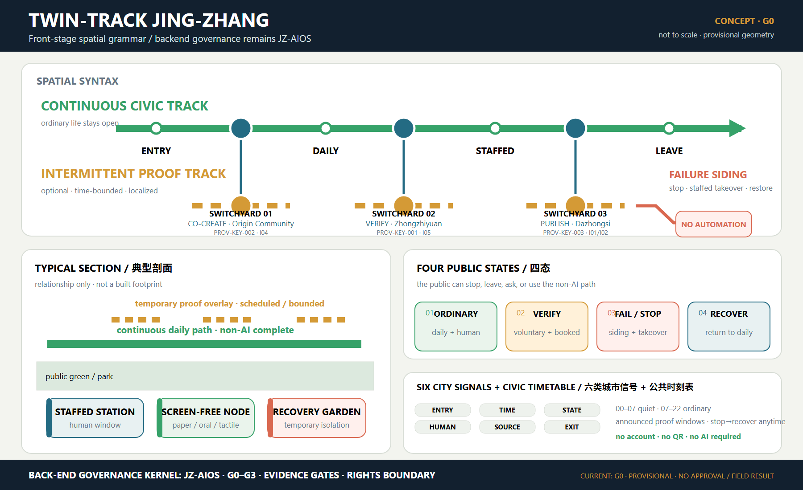
The Single Core Mechanism
The century-old Jing-Zhang corridor is not a technology corridor on which AI products are placed. It is a public AI innovation production line that transforms urban problems into outcomes that are co-creatable, verifiable, pausable, reproducible, and deliverable to society. “AI Pilgrimage” does not mean worshipping technology. It describes a knowledge journey on which the public can “understand history → raise a problem → participate in joint testing → witness failure → leave a credited contribution.” Proof in the English name refers simultaneously to spatial evidence, technical verification, and proof of public value.
The overall structure evolves from “one spine, three anchors, six interfaces, and multiple nodes” to “one proof line, three state stations, two supply wings, and six urban interfaces.” The three state stations are not three homogeneous parks. Beijing AI Origin Community is responsible for co-creation and public deliberation; Zhongzhiyuan AI Independent Innovation Acceleration Area (Zhongzhiyuan) is responsible for technical, safety, and governance verification; and Dazhongsi is responsible for public release, urban services, and outcome transformation. The Xiaoyue River Scenario Enablement Wing supplies real problems and experiential feedback, while the Zhongguancun Technology Services Wing offers proposed support in intellectual property, compliance, talent, capital, and transformation. Every role assigned to an external organization is a planning recommendation and does not mean that cooperation has been secured [assumption:A-EXTERNAL-COLLAB-005] Depth.
Readable Mapping to the Three Positioning Statements and Five Functions
The mapping below translates the taskbook's own terms directly into spatial and operating mechanisms instead of leaving them as compliance-matrix checkmarks. It remains a conceptual response for professional teams to develop further; it creates no statutory function, project authorization, or institutional commitment Source Standard.
| Taskbook position / function | Direct response in this proposal | Boundary that must not be crossed |
|---|---|---|
| The Centennial Jing-Zhang Cultural Belt | A double helix of railway engineering, Zhongguancun innovation, and AI correction history, with three knowledge-journey landmarks | Historical facts, heritage, names, and media await official/archival and rights review |
| The Urban AI Life Experience Belt | Six interfaces, nine everyday-first public nodes, non-AI parity, and quiet/screen-free modes | Field coverage is not an open service or a public-experience result |
| The AI Convergence Innovation Belt | A problem–co-create–verify–publish/service–transform–feedback state machine across three areas and two wings | No fabricated company, partner, land, funding, or implementation commitment |
| Full-stack independent AI innovation system | Zhongzhiyuan hosts proposed offline, shadow, bounded-test application, safety, and independent-retest gates | No claim of an existing full-stack platform, operator, or approved test field |
| World-class AI innovation ecosystem | Origin Community co-creation interfaces, six international comparisons, and two-wing factor support | “World-class” is an objective, not a ranking, concentration measure, or partnership fact |
| New paradigm for AI+ scenario enablement | Twelve scenario passports, three first-test protocols, and non-skippable G0–G3 gates | All items remain G0; approvals, participants, executions, and results remain 0 |
| Intelligent AI-vibrant city | Daily, learning, Beta, quiet, and offline modes alongside staffed services | Screens, surveillance, event popularity, and mandatory accounts are not proxies for vitality |
| Global voice in AI governance | Traceable sources, published failures, suspension and grievance, expiry and retirement, and retest packages | A discussable method only; it is not an international rule or government institution |
In conceptual south-to-north order, the spatial interfaces are I01 Dazhongsi Communication Interface, I02 Urban Services Interface, I03 Xiaoyue River Experience Interface, I04 University Co-creation Interface, I05 Zhongzhi Verification Interface, and I06 Qinghe Ecological Calibration Interface. They correspond to PUBLIC-004—PUBLIC-009 in geometry/public_space.geojson. Human-facing spatial prose uses I01—I06 only; G0—G3 is reserved for scenario maturity. The existing GeoJSON GATE-01—GATE-06 values are retained machine-compatibility identifiers, not spatial stages or human labels. All six interfaces are audit/service types pending field verification, not newly sited landmarks. Each interface type must jointly audit public space, a lateral slow-mobility link, sponge-system stitching, non-AI access, quiet hours, and scenario relay, prioritizing reuse of existing entrances and service facilities Spatial data Spatial data Metric.
The proposed logo uses two open-ended rail lines to form the letters JZ. The opening between them becomes a “verification opening with room for human intervention,” and six short ticks represent the six spatial interfaces. The logo uses only geometric linework and a project-owned wordmark; it does not use corporate trademarks, portraits, or restricted fonts. The overall palette comprises Rail Silver, Haidian Blue, Open-source Green, Verification Orange, and Bell Gold. Cultural wayfinding follows a separate three-line grammar—“mileage, year, source”—so that the cultural signage is not confused with the overall logo system.
Coordinated Research Area: Industry and Future City Research
Three-Anchor, Two-Wing Industrial State Machine
Industry is not zoned by company lists; space and resources are allocated according to task state. The Xiaoyue River Wing gathers problems that residents, urban service providers, and public bodies are willing to make public. Origin Community converts those problems into open-source tasks, user journeys, and comparison baselines. Zhongzhiyuan verifies models, robots, safety, ethics, and interoperability in offline, shadow, and bounded environments. Dazhongsi converts passed outcomes into urban services, enterprise services, and international exchange that the public can understand. The Zhongguancun Technology Services Wing offers proposed compliance, intellectual-property, talent, computing, and transformation support at every stage. Complaints, incidents, failures, and public-value results feed into the following year. Public Beijing materials propose opening the Origin Community, Beiwei Community, and the century-old Jing-Zhang corridor to real-world testing for urban governance and public services. This provides a practical interface for a “proof belt” rather than an ordinary display belt, but this proposal does not present that public direction as project authorization Source.
Eight resource types follow a “public foundation + conditional access” model. Land provides only reversible-use interfaces. Space provides shared laboratories, public living rooms, and bounded test surfaces. Industry is driven by problems rather than vendors. Funding is limited to a proposed multi-party review and milestone-disbursement mechanism, without inventing budget amounts. Talent is engaged through joint testing by developers, residents, and professionals. Computing prioritizes auditable shared environments. Data follows necessity minimization, retention at source, and controlled computation. Every scenario must hold a passport and expire. The National Data Infrastructure Construction Guidelines provide policy context for consensus rules, trusted controls, and auditable lifecycles in trusted data spaces, but they do not mean that this project’s data system has been approved Source.
Six Cases: Mechanism—Local Action—Verification—No-Go Area
| Case | Transferable mechanism | Local Jing-Zhang action | Proposed verification | Not directly transferable |
|---|---|---|---|---|
| Kendall Square | Joint organization of research, firms, housing, and public space | Co-locate Origin Community’s co-creation street with everyday services | Whether cross-institutional co-creation and resident use occur together | Land regime, rents, and firm density Source |
| one-north | Themed districts connected by shared facilities and walking networks | Three state stations share one passport and retest package | Whether the relay between stations preserves the same evidence version | Development system and authority over park management Source |
| Barcelona 22@ | Industrial upgrading proceeds in parallel with neighborhood renewal and knowledge transfer | Use the six spatial interfaces first to repair everyday public frontages | Whether public-interest delivery precedes expansion | Land-use policy and fiscal instruments Source |
| King’s Cross | Heritage reuse, car-free public space, and mixed use | Present railway engineering history and contemporary public life along the same line | Whether residents continue to use the area on non-event days | Ownership, protection grades, and business model Source |
| STATION F | Physical space operated through programs, mentors, and partner networks | Four-season operating protocol and a problem-to-Proof funnel | Cycle time from problem to bounded prototype | A single large campus and private operating conditions Source |
| MaRS | Coupling laboratories, offices, events, and community services | Co-locate publication, compliance advice, and staffed service at Dazhongsi | Success rate of human handoff and follow-up services | Healthcare, investment, and institutional systems Source |
Regional coordination uses a “testing relay,” not a vague alliance. The Future Science City is proposed for retesting in basic science or frontier equipment; Huairou Science City for verification related to major scientific facilities; the Beijing Economic-Technological Development Area for engineering retests in manufacturing and embodied systems; other first-batch innovation districts for cultural or industrial scenarios in which they specialize; and Beijing–Tianjin–Hebei nodes for cross-regional replicability checks. Each relay transmits only tasks, protocols, anonymized results, and failure records; it does not require the transfer of raw sensitive data. The publicly stated “one core, multiple points” pattern only shows that this division of work has a basis for discussion; it does not mean that any node has agreed to participate Source.
Overall Design Area: Urban Renewal and Regulatory-Plan-Level Urban Design
The overall area takes the opened park’s north–south green corridor, reported lateral connections, and all-age public activity as a publicly reported baseline rather than an object that this proposal has yet to build from scratch Source. Only then does it organize a three-layer section: railway-side historical interpretation, existing slow-mobility and blue-green space, and a reversible innovation-service layer. The railway side receives only low-intervention interpretation; the middle first protects everyday walking, cycling, and staying; and the neighborhood side uses six interface types to audit breaks and add small-scale services. Any action crossing railways, rivers, urban roads, bridges, tunnels, or underground space is only a question pending verification and a design direction; separate field, transport, flood-control, railway-safety, and engineering studies are mandatory.
Land use is refined from 12 large color blocks into 36 irregular, topologically closed conceptual units. They cover nine project-enumerated categories: research, education, housing, community services, commercial services, culture, green space, plazas, and flexible reserve. The number and categories of units can be recalculated from the GeoJSON Metric Metric. They express spatial–industrial functional envelopes and are neither statutory parcels nor approved uses Spatial data Depth.
The six lateral interface lines and the north–south main line form a fishbone accessibility network. Every interface binds slow mobility, public space, stormwater stitching, and a testable urban problem. The nine public spaces do not turn the park into a round-the-clock testing ground. Instead, they follow reversible time-space rules: daily life is the default; public learning is scheduled; bounded Beta operation occurs only during approved periods; quiet mode applies from 22:00 to 07:00; and everyone can always choose a non-AI route. The innovation is not that “the city adapts to AI,” but that “AI must adapt to everyday urban life.”
The building layer uses massing prototypes to express priority intervention capacity; it does not simulate the complete existing city. Each prototype is marked as retain for assessment, adaptive-reuse candidate, or new-build candidate. Without evidence from surveys, ownership, structural conditions, heritage controls, and regulatory planning, none may be converted into a demolition or construction conclusion. Floor area ratio, total floor area, building height, road red lines, parking, and municipal capacity remain unknown [assumption:A-SPATIAL-REPRESENTATION-002] Depth Depth.
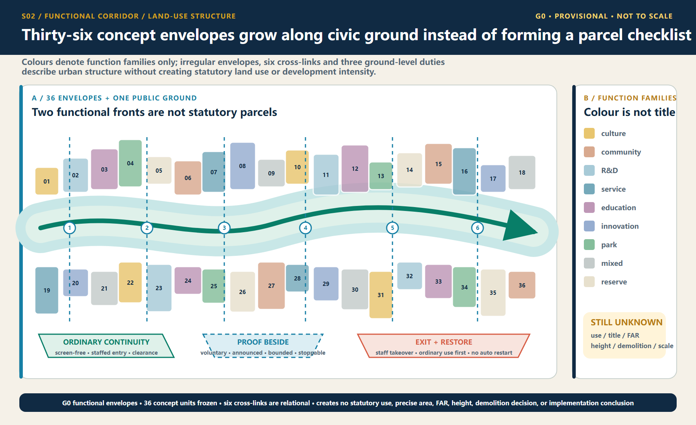
Detailed Design of Key Areas
The three key areas use the same response framework—site conflict, spatial structure, core project, AI scenario, admission gate, and acceptance—and organize the material at key-area detailed-design depth Depth. The extents below remain provisional substitutes; all area and massing-coverage values are for conceptual review only Spatial data Spatial data Spatial data.
Key-area evidence crosswalk
To keep “key area → scenario → acceptance” reviewable rather than implicit in long prose, visual/assets/key-area-evidence-matrix.json crosswalks each provisional area to its state station, public anchor, I/GATE interface references, AI service zone, scenario nodes and concept-level acceptance contract, then lists the formal evidence required before G1 Spatial data Metric. Its 100% matrix-field coverage means only that the three records contain the required crosswalk fields; it does not mean field coverage, partner confirmation, approval, operating performance or public-value evidence. Field audits, accountable-role confirmation, approvals, test executions and known results remain 0 for all three records Metric.
| Provisional key area | Station / conceptual spatial response | AI zone / scenarios | Evidence required before G1 | Current boundary |
|---|---|---|---|---|
PROV-KEY-001 Zhongzhiyuan | VERIFY; one garden, one stack, two interfaces | AI-ZONE-001; SCENE-001—004 | Legal/owner site, safety and physical-stop review, accountable roles, non-AI baseline, independent retest package | Provisional extent, not approved, untested |
PROV-KEY-002 Origin Community | CO-CREATE; one street, two courtyards, four nodes | AI-ZONE-002; SCENE-005—008 | Venue and safeguarding, rights and consent, non-technical participation, withdrawal route, independent retest package | Provisional extent, no partner commitment, untested |
PROV-KEY-003 Dazhongsi | PUBLISH; four-quadrant walking plus one commons and one desk | AI-ZONE-003; SCENE-009—012 | Route/service ownership, staffed desk, source maintenance, same-task comparator, independent retest package | Provisional extent, no approved service desk, untested |
The sections no longer render the three areas as one generic campus template. Zhongzhiyuan separates the public observation edge, low-risk test-garden loop, and verification/service edge. Origin Community protects resident passage and exit through a continuous daily street, problem court, public-review court, and four removable nodes. Dazhongsi makes releases yield to commuting, screen-free rest, and staffed tasks through four-way walking, the Bell-Rail Commons, a staffed desk, and quiet rest. Each area uses one authoritative operating sequence—ordinary, verification, fault, and recovery—producing three differentiated sections and twelve G0 concept states. The current verification state means only a booked, bounded G0 activity that claims no field performance; any future approved bounded co-test remains a maturity gate before verification, not a fifth state. The drawing and matrix state what yields first, how a fault is isolated, how ordinary use returns, and what blocks restart Spatial data Metric.
The matrix adds only reviewable design mappings. It does not turn interface IDs into sited landmarks or public desk research into as-built survey, regulatory plan, ownership or institutional commitment evidence Spatial data.
A shared reading method for three spatial prototypes
This round gives the two existing figure families distinct jobs. key-areas draws each place in its ordinary plan state first, then adds ground-floor public interfaces, staffed handoff, removable components, and a four-step public journey. key-area-sections translates the same object into an area-specific relationship section, ordinary–proof–fault–recovery states, and place-restoration acceptance. The green line is the continuously protected non-AI/accessibility intent; the blue dashed line is a stoppable and removable service overlay; pale dashes and massing blocks are unknown relationships only. No figure supplies a scale, exact siting, existing-building record, or engineering section. Accessibility continuity, clear width, slopes, turning, tactile guidance, and rest conditions all require survey and co-testing evidence [assumption:A-KEY-AREA-SPATIAL-011].
Six cohesive work packages make up this refinement: Zhongzhiyuan’s parallel proof court and equipment isolation; Origin Community’s one street, two courts, four nodes and screen-free withdrawal; Dazhongsi’s four-quadrant walk and one hall/one desk; continuous non-AI/access routes and staffed handoff at all three; removable components and night-time quiet; and four-state switching, place-restoration acceptance, and structured evidence backlinks. They share an evidence grammar but never a plan skeleton, and use only the existing PROV-KEY-001–003, AI-ZONE-001–003, and SCENE-001–012 objects Spatial data.
All three prototypes inherit the 22:00–07:00 quiet gate: no testing, amplification, or event priority is allowed, while ordinary paths, screen-free information, and staffed help remain available. This is a conceptual operating constraint; exact opening conditions still require field and accountable-operator confirmation.
Zhongzhiyuan: Verification Station / VERIFY
The conflict is that autonomous technology needs real problems and compound testing, while urban public space cannot become an unbounded testing ground. In line with Haidian’s latest public objectives, Zhongzhiyuan treats AI4S, AI-safety governance, and mutual recognition of rules as proposed verification themes; it does not claim that platforms, partners, or international mechanisms already exist Source. The spatial structure is “one garden, one stack, two interfaces.” Qinghe Test Garden supports environmental and low-risk joint testing. The Verifiable Model Commons supports offline benchmarks, safety checks, and interoperability checks. The community-facing side provides a public observation and grievance interface, while the service side supports human takeover and equipment maintenance. AI-ZONE-001 binds four nodes: low-speed delivery, energy use, safety assessment, and the failure archive Spatial data Spatial data. Admission requires complete sources, a responsible person, a risk level, a comparison baseline, and a physical emergency stop. Any collision, boundary breach, unauthorized data processing, or failed human takeover triggers immediate suspension. Acceptance is not based on a “successful demonstration,” but on a complete retest package, reproducible failure, usable human takeover, and passage through the public-value gate.
How to read the drawing / missing evidence. In the plan and section/mode diagrams, the pale dashed line represents only the provisional conceptual extent of PROV-KEY-001. The public observation path is separated from the low-risk test-garden loop, while the service/physical-stop edge receives equipment withdrawal. Ecological daily, booked offline verification, fault isolation, and place-restoration acceptance remain G0 hypotheses; a future approved bounded co-test is a maturity gate before verification, not a current capability or another operating state. No exact location, scale, approval, test, or result may be inferred until official boundary and site conditions, accountable roles, and railway, fire, network, data, and physical-stop reviews are complete Spatial data Spatial data [assumption:A-KEY-AREA-DETAIL-010].
Place journey / ground-floor handoff. An ordinary user first walks or rests along the public observation edge. Only after reading state, time, and exit signals and opting in do they enter an announced offline-verification session through a visible staffed handoff. A physical-stop failure, boundary breach, collision, equipment nuisance, or failed staffed takeover isolates the proof court immediately while the ordinary path stays open. Equipment, enclosure, cables, and temporary signs must leave; path surface, planting, sound, light, and the staffed explanation must pass restoration review and the independent-retest gate must close before reactivation is considered. Current restoration status is unknown / not executed. Physical isolation, the service edge, and the independent-retest gate belong to the Zhongzhiyuan verification prototype and cannot be mechanically copied into a resident co-creation court or commuter release place Spatial data.
Beijing AI Origin Community: Co-creation Station / CO-CREATE
The conflict is the absence of a stable interface between a high density of innovation resources and residents’ daily lives, low-cost entrepreneurship, and public participation. Public materials describe Origin Community as an approximately 3 km² area with a “ten-minute innovation circle” context; published scale figures are context only, not an inventory of this project’s resources, a siting basis, or evidence of partnership Source. The spatial structure is “one street, two courtyards, four nodes,” with five-minute everyday-life support cells nested inside the ten-minute innovation context and a broader fifteen-minute public-service planning framework. The Open-source Release Street connects universities and the community. The Co-creation Courtyard supports problem decomposition and team matching. The Public Deliberation Courtyard supports resident joint testing, education for minors, and screen-free discussion. AI-ZONE-002 binds trusted cultural guidance, open-source matching, educational workshops, and climate-and-accessibility joint testing Spatial data Spatial data. Admission requires a problem grounded in an explicit public need, participants able to withdraw, and recommendations excluded from hiring evaluation. Acceptance focuses on cross-role co-creation, responsiveness to withdrawal, non-technical participation, and differences in task success across groups.
How to read the drawing / missing evidence. The plan and section/mode diagrams read “one street, two courtyards, and four nodes” as withdrawable participation overlays on a continuous daily street. Community daily, issue clinic/learning, fault withdrawal, and quiet/safeguarding recovery remain G0 hypotheses; a future approved co-design test is a maturity gate before verification and does not imply participation by a community, school, or venue. No partner commitment, approved co-testing, or learning outcome may be inferred until the exact venue and opening hours, safeguarding and accountable roles, content rights, consent/withdrawal, and non-technical participation conditions are confirmed Spatial data Spatial data [assumption:A-KEY-AREA-DETAIL-010].
Place journey / ground-floor handoff. Residents can pass and stay on the continuous daily street without an account, QR code, or entering either court; screen-free learning nodes provide paper information and a person to ask. A participant gives withdrawable consent before entering the problem or review court and may exit at any node. Event kits, seating, canopies, and signs stay outside the through-route. Withdrawal, a safeguarding gap, a material group disparity, amplified nuisance, or failed night-time quiet stops capture and matching immediately while paper and staffed service remain. Restoration acceptance requires every screen, amplifier, capture device, and temporary sign to leave and both courts and the street to return to resident daily use. The paired-court relationship, four withdrawal nodes, and resident quiet gate belong only to Origin Community; current quiet-time delivery and restoration status are both unknown / not executed Spatial data.
Dazhongsi: Publication Station / PUBLISH
The conflict is that station-area footfall, enterprise services, and consumer display can easily turn AI into screen-based marketing while displacing staffed services and quiet space. The design first acknowledges the opened southern section’s community, commuting, and all-age activity baseline, rather than repackaging existing connectivity improvements as this proposal’s outcome Source. The spatial structure is “four-quadrant walking + one hall and one desk.” The four quadrants indicate connection directions pending field verification. The Bell-and-Rail Commons presents evidence of passage, failure, and correction. The Urban Services Desk places intelligent navigation alongside a staffed counter. The publication frontage provides screen-free default areas and quiet hours. Haidian’s public Fifteenth Five-Year Plan sets district-level objectives to become a global AI innovation source and industry highland by 2030 and to advance high-quality urban renewal; it is used here only as district direction and does not show that any specific Dazhongsi parcel is included, rights are settled, or delivery is committed Source. AI-ZONE-003 binds accessible routing, slow-mobility guidance, enterprise services, and health navigation Spatial data Spatial data. Acceptance focuses on source-hit rate, expiration notices, human handoff, complaint closure, and incremental value over existing services—not event attendance or exposure.
How to read the drawing / missing evidence. The plan and section/mode diagrams show four-way walking, one commons, one staffed desk, quiet rest, and physical wayfinding as relationships pending verification—not an exact route or approved service point. Commute/rest, booked evidence release, fault offline, and source/service recovery require every AI overlay to pause and return to ordinary use. A future approved service trial is a maturity gate before verification, not a current capability or fifth state. No deployment, formal-service outcome, or field performance may be inferred until exact route, venue and service ownership, current barriers and accessibility conditions, source maintenance, and staffed-handoff capacity are confirmed Spatial data Spatial data [assumption:A-KEY-AREA-DETAIL-010].
Place journey / ground-floor handoff. A commuter first follows physical wayfinding along the four-way route and may complete the same basic task directly at the staffed desk. Evidence release is an optional stay outside the route and cannot create a queue or event enclosure across it. A stale source, conflicting answer, failed handoff, or broken accessible route takes the automated service, screens, sound, and light offline while staffed service and ordinary movement continue. Release kit removal, source correction, complaint handoff, and a full retest must close before recovery is considered. The four-way commute cross, source ledger, and adjacency of staffed service belong only to the publication prototype. PROV-KEY-003 remains an order- and area-fitted provisional polygon; it does not prove an exact anchor to Dazhongsi station, a railway boundary, an existing road, or any building ground floor Spatial data.
The three pilgrimage landmarks are redefined as three chapters in one knowledge journey. Zhongzhiyuan’s “Open-source Spark Tower” records reproducible contributions without displaying personal rankings. Origin Community’s “Algorithm Milestone” places Jing-Zhang engineering history, Zhongguancun innovation history, and the history of AI correction side by side. Dazhongsi’s “Bell-and-Rail Commons” houses an archive of failures and corrections. Contributors may choose real names, pseudonyms, or anonymity. Recognition records only verifiable public contributions and is not tied to wealth, traffic, recruitment, or administrative evaluation. All names and forms require copyright, trademark, portrait-rights, historical-source, and accessibility review [assumption:A-CULTURE-CONTENT-006].
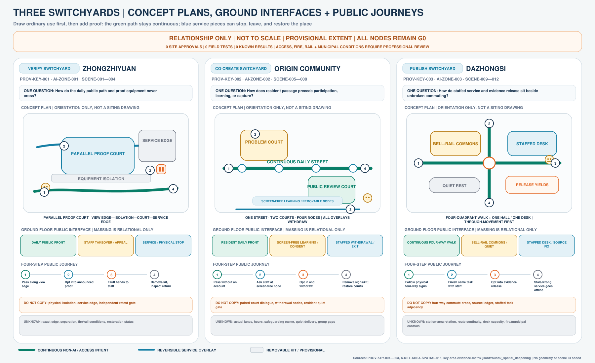
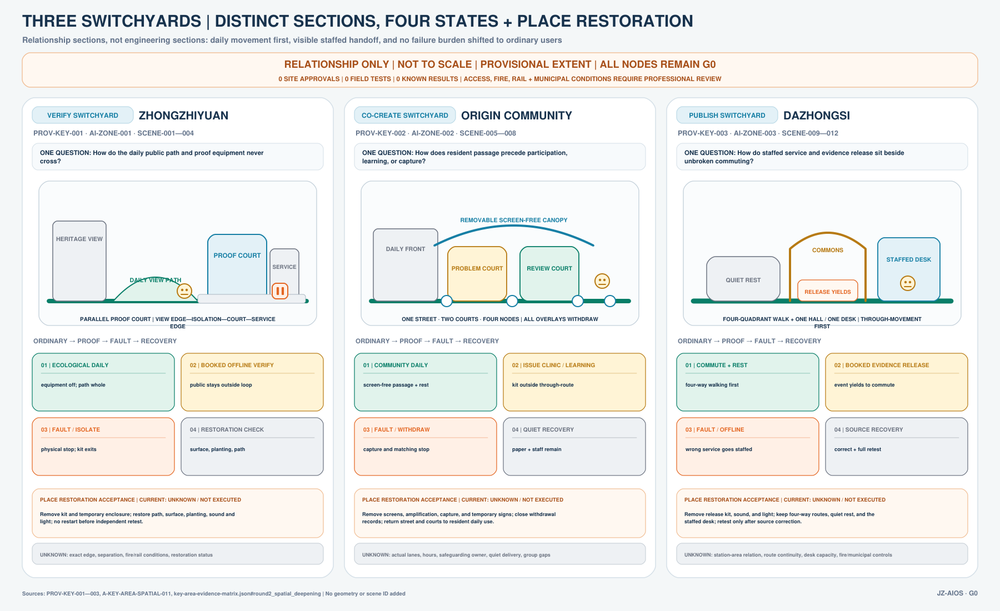
Components that cannot be copied mechanically, and their recovery gates
Zhongzhiyuan VERIFY
- Exclusive components: parallel proof court, physical equipment-isolation strip, service/stop edge, and independent-retest gate.
- Ordinary baseline: the public observation edge, non-AI passage, and staffed appeal must remain.
- Recovery gate: remove equipment, enclosure, and cables; review surface, planting, sound, and light; current state
unknown / not executed.
Origin Community CO-CREATE
- Exclusive components: paired-court dialogue, four withdrawal nodes, screen-free learning corridor, and resident quiet gate.
- Ordinary baseline: resident passage, screen-free staying, paper information, and staffed exit must remain.
- Recovery gate: remove screens, amplification, capture, and signs, then close withdrawal records; current state
unknown / not executed.
Dazhongsi PUBLISH
- Exclusive components: four-way commute cross, off-route evidence commons, source ledger, and staffed-task adjacency.
- Ordinary baseline: four-way passage, quiet rest, physical wayfinding, and same-task staffed service must remain.
- Recovery gate: remove release kit, sound, and light; correct sources, close complaints, and complete the full retest; current state
unknown / not executed.
The “restoration acceptance” above is a conceptual checklist for a future accountable role, not site approval, completion acceptance, or proof that existing conditions comply. All three prototypes require removability, stoppability, and a detour, but no component may be sited until exact land, ownership, fire, railway protection, municipal, accessibility, and operating responsibility evidence has passed professional review [assumption:A-KEY-AREA-SPATIAL-011] Spatial data.
AI Innovation Ecosystem, Personas, and AI+ Scenarios
Seven Joint-Testing Profiles
Haidian’s latest public requirements prioritize three groups: leading research talent, young innovators and entrepreneurs, and permanent residents. This proposal does not create a separate persona system. Instead, it maps them to the existing seven: leading research talent primarily maps to open-source developers and university faculty and students; young innovators and entrepreneurs map to start-up teams and connect with enterprise-service teams; permanent residents map to nearby residents and older people and people with reduced mobility; tourists and international visitors remain as reviewers of communication and legibility. The three policy groups set demand priorities, while the seven profiles decompose joint-testing and risk. Neither means that samples have been recruited or research completed Source Spatial data.
| Profile | Core needs | Potential harm | Hard protection |
|---|---|---|---|
| Open-source developers | Computing, protocols, retesting, and collaborators | Contributions captured by a platform | Right to withdraw, clear licenses, portable contributions |
| Start-up teams | Low-cost verification, compliance, and transformation | Misled by demonstration metrics | Publish failures; prohibit implied government endorsement |
| Enterprise-service teams | Clearly sourced administrative and market information | Harm from outdated content | Source dates, human handoff, and clear responsibility boundaries |
| University faculty and students | Learning, research, and outcome transformation | Leakage of education data | Local sandbox, teacher review, and minimum data for minors |
| Nearby residents | Quiet, accessibility, and everyday services | Noise, congestion, surveillance, and exclusion | Daily life first; quiet and screen-free operation; grievance and pause rights |
| Older people and people with reduced mobility | Continuous accessibility and human assistance | Exclusion through digital barriers | Non-AI access, joint testing, and no withdrawal of staffed service |
| Tourists and international visitors | Trustworthy multilingual cultural content | False narratives and excessive collection | Source labels, curatorial review, and account-free browsing |
Non-AI-First Public City: Seven Rights and Two Paths to the Same Task
Core principle. Non-AI is not a backup button used after AI fails. It is a first-class public-space and service infrastructure on the continuous civic track. A person must first be able to read a physical rights legend and use paper, speech, physical wayfinding, or staffed service along a continuous non-AI/accessibility-intent line, and may then choose bounded AI assistance voluntarily. The interfaces may differ, but both paths must reach the same essential outcome, eligibility, cost rule, accountable queue, appeal and correction rights, and stop/recovery route. “Permanent” means these design rights may not be removed from any future offered service window; it does not claim that the three places currently have fixed hours, assigned staff, or an approved service Spatial data [assumption:A-NON-AI-FIRST-013].
| Seven permanent public rights | Spatial and service requirement | Unacceptable counterexample |
|---|---|---|
| 1. No account or QR code | Entry, orientation, the basic task, complaint, and exit do not depend on an account, QR code, smartphone, or personal device | Entry is nominally open but service, ticketing, or appeal requires a scan |
| 2. Complete non-AI path | Paper, oral, physical-wayfinding, or staffed channels actually reach the same essential outcome | A sign says “ask staff” but no task-completing handoff chain exists |
| 3. Continuous accessibility intent | The ordinary route and service sequence are continuous by design; activities, queues, cables, and equipment may not occupy them. Field compliance still requires survey, co-testing, and professional review | A green line is presented as proof of existing accessibility compliance |
| 4. Staffed service and handoff | When a future service is offered, a visible or callable human route receives, explains, safely refuses, or transfers the same task | Volunteers or event staff are presented as stable duty bearers |
| 5. Consent can be withdrawn | Passage and basic service do not depend on co-testing or data processing; withdrawal can be oral, on paper, or through staff | Withdrawal is possible only by returning to a digital interface |
| 6. Appeal and correction | Complaint, evidence supplement, correction, suspension, status query, and review enter the same accountable queue across channels | A non-AI request is deprioritised or receives no durable status reference |
| 7. Screen-free and quiet | Screen-free waiting, physical information, and quiet rest remain; sound, light, queues, and events yield to ordinary movement and the quiet baseline | Persistent displays, announcements, or event intensity substitute for public service |
Dual-entry service blueprint. The common entry first shows the seven rights and six civic signals. The primary route is “paper/oral task entry → screen-free waiting and physical status → dual-entry staffed desk → same basic task → paper/oral complaint, withdrawal, or correction → technology-free exit.” The optional AI route begins only after plain-language disclosure and separate voluntary consent, then rejoins the same staffed desk and accountable queue. Any hard failure stops the automated overlay while ordinary passage and the non-AI task remain, or a safe refusal and accountable handoff are provided. Temporary sound, light, screens, queues, collection, and equipment leave; restart cannot be discussed until independent retest and place restoration close Spatial data.
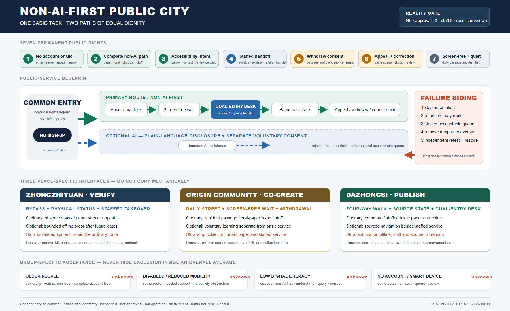
| Switchyard | Continuous ordinary path and non-AI entry | Optional AI overlay | Stop and recovery |
|---|---|---|---|
| Zhongzhiyuan VERIFY | Continuous bypass and observation, physical state sign, staffed takeover point, and paper stop or appeal | Bounded offline proof only after future gates | Boundary breach, collision, failed detour, nuisance, or failed takeover isolates equipment while the ordinary path remains; equipment, cables, enclosure, sound, light, and queue leave before independent path and place recheck |
| Origin Community CO-CREATE | Continuous daily street, screen-free waiting, paper or oral issue, staffed explanation, and withdrawal | Voluntary co-learning separated from passage and basic service | Failed withdrawal, safeguarding gap, material group disparity, amplified nuisance, or quiet-baseline failure stops collection and matching; paper and staffed service remain, digital/event overlays leave, and resident daily use returns |
| Dazhongsi PUBLISH | Continuous four-way walking, physical source status, dual-entry staffed desk, and paper correction or appeal | Source-bounded navigation beside rather than over staffed service | Stale/conflicting sources, diagnosis-like output, failed handoff, blocked commuting, or unequal grievance takes automation offline; staffed and source-list service remain, the queue is corrected, event kit leaves, and all four movement arms are retested |
Accept each group separately; do not hide exclusion inside an overall average. Older people must complete “find the right—ask orally—wait without a screen—complete the task—correct/withdraw—leave without an account.” Disabled people and people with reduced mobility must complete the same route and service sequence with needed communication or mobility support and no activity obstruction. People with low digital literacy must discover the non-AI choice without prompting, understand the next step, complete it, query status, and seek correction. People without an account or smart device must receive a durable status reference, enter the same queue, and retain the same cost and review rights. Each group records completion/abandonment, route or communication breaks, unplanned handoff, waiting and extra-step burden, rights understanding, and complaint/withdrawal/correction outcomes separately. Denominators, thresholds, and results require consent, a field baseline, and preregistration; all currently remain unknown / not measured Spatial data.
Reality-maturity self-check. The structured contract now contains seven rights, three place-service contracts, four group-acceptance structures, and six same-task journeys. These are documentation coverage, not field performance. Confirmed operators: 0; confirmed service staff: 0; real service interactions: 0; known group results: 0; real approvals and operations: 0. The ten-case T-02 synthetic decision replay proves G0 contract logic only and does not prove that a non-AI path is available. Exact service points, windows, staffed capacity, accessibility compliance, group samples, thresholds, complaint performance, and recovery performance remain unknown. Every scene remains G0; provisional boundaries, scene IDs, and rights status are unchanged Metric Metric Spatial data.
Four-Gate System and Scenario Passports
JZ-AIOS requires every scenario to proceed in sequence through G0 concept/offline, G1 shadow comparison, G2 time-bounded and geographically bounded Beta, and G3 approved public operation. No level may be skipped. Every node in the current submission is in G0 conceptual status; no scenario is operating or approved. Each passport must include version, responsible role, risk level, minimum dataset, geographic and temporal boundary, potentially harmed groups, human takeover, grievance channel, non-AI option, admission conditions, stop conditions, retest package, and expiry date [assumption:A-SCENARIO-PROTOCOL-004].
The 12 scenarios are grouped in human-facing prose as safety and access (SCENE-001, 003, 009, 010), trusted public service (SCENE-002, 005, 011, 012), and public learning and collaboration (SCENE-004, 006, 007, 008). The machine record retains every SCENE-001—012 passport and field; grouping does not indicate deployment, priority, or test results. The ten service scenario cards are listed below. A spatial Feature indicates conceptual placement only, not deployment:
| ID / Node | Scenario and space | Minimum input → output | Responsibility and manual fallback | Admission / stop / retirement |
|---|---|---|---|---|
SC-01 / SCENE-005 | Trusted Jing-Zhang cultural guide; Origin–milestone route | Rights-cleared historical sources and an actively selected language → sourced content | Human curator; account-free print/audio alternative | Complete sources and AI labels; remove disputed content that cannot be verified; annual review |
SC-02 / SCENE-009 | Accessible route assistant; Dazhongsi and I01—I06 | Slopes, temporary obstacles, and facility status → suggested route | Confirmation by on-site service staff; retain physical wayfinding | Road test and joint testing passed; stop recommending a route upon any critical obstacle; invalidate when data changes |
SC-03 / SCENE-010 | Slow-mobility crowding notice; public greenway | Segment-level anonymous flow → detour suggestion | Published by management staff; no automated control | No facial data; return to static wayfinding if false alerts affect passage; expire after the event |
SC-04 / SCENE-001 | Low-speed delivery sandbox; authorized surface in Zhongzhiyuan | Vehicle state, geofence, and obstacles → low-speed task | On-site safety officer, physical emergency stop, and manual towing | May apply for G2 only after passing offline and closed-site tests; one collision or boundary breach triggers suspension; retire the configuration after each test |
SC-05 / SCENE-011 | Enterprise-service agent; Dazhongsi Services Desk | Public policy and a user-initiated question → sourced navigation | Staff handle formal matters | Complete sources and update dates; suspend if an error affects official procedures; policy updates trigger invalidation |
SC-06 / SCENE-006 | Open-source collaboration matching; Origin Co-creation Courtyard | Voluntarily disclosed skills and topics → team suggestions | Community operator processes withdrawal; excluded from hiring evaluation | Confirm withdrawal and license terms; stop upon discriminatory matching; clear data when the project ends |
SC-07 / SCENE-002 | Public-space energy assistant; Zhongzhiyuan and I01—I06 | Equipment and environmental data → lighting suggestion | Operations staff retain priority; manual switches remain available | No identity data; return to manual control if safety lighting is affected; retest when seasonal parameters expire |
SC-08 / SCENE-012 | Community health navigation; beside staffed service at Dazhongsi | Publicly listed institutions and a user-initiated inquiry → public information and booking entrance | No diagnosis; emergencies handed off to professional institutions | Clear boundary notice; any diagnostic output triggers suspension; invalidate when institution information changes |
SC-09 / SCENE-007 | Educational experience workshop; Origin Community | Local teaching data → bias and programming exercises | Full teacher review; minors’ data do not leave the site | Parent/school rules and local sandbox in place; stop upon external data transfer; destroy temporary data after the course |
SC-10 / SCENE-003 | Assisted safety-incident assessment; Zhongzhiyuan control room | Equipment alerts and human reports → unverified incident summary | Authorized personnel decide; no automated enforcement | Permissions, logs, and comparison baseline complete; suspend upon overreach or misleading handling; re-review after model changes |
Two public-governance nodes are added. SCENE-004, the “Public Archive of Failures and Corrections,” records suspensions, corrections, and voluntary retirements. SCENE-008, “Climate and Accessibility Joint Testing,” makes older people, children, and people with reduced mobility co-testers at an early stage rather than passive recipients of acceptance after completion. Node and service-zone counts are machine-verifiable Metric Metric. Passport and manual-fallback field coverage is counted separately and does not prove field performance Metric Metric.
Three Priority Industrial Test Protocols
- T-01 Robot Safety Graduation Protocol: G0 digital and closed-site baseline → G1 shadow task → application for G2. Proposed hard gates require all physical emergency stops to succeed in controlled tests, zero collisions, zero boundary breaches, and a complete human-takeover chain. Any safety red line triggers suspension, review, and restart from a lower gate. The figures are proposed design acceptance criteria, not measured results.
- T-02 Sourced Enterprise-Service Protocol: This is the first offline reproducible evidence package. It freezes the question set, source closure, update times, refusals, stop/recovery behavior, human handoff, and an independent-retest placeholder so others can review the same materials. A zero-dependency Node.js 22.x runner completed one governance-decision replay across 10 PII-free synthetic fixtures: 10/10 exactly matched the expected decisions; all four distinct declared stop events mapped to their exact recovery actions; and 13/13 negative mutation controls failed closed on unknown fixture and frozen-contract fields, enum and answer-mode drift, full source closure, prohibited-data precedence, canonical RACI closure, real-service authorization, and summary-count tampering. This proves only deterministic G0 contract behavior and refusal precedence. It produces no substantive answer and calls no model, API, or real service. Answer outputs, model calls, API calls, real-service interactions, field tests, approved triggers, confirmed accountable parties, real independent retests, and G1 results all remain 0 or unknown Spatial data Spatial data Metric. Entry into a bounded service may be requested only after source coverage, stale-information warnings, human takeover, approvals, accountable parties, and independent real-world retesting reach pre-published thresholds. Suspend the service if an error affects a formal procedure.
- T-03 Universal-Access Route Protocol: This is the spatial and public-interest exemplar: wheelchair users, visually impaired users, older people, child caregivers, and ordinary pedestrians complete the same task together. A proposal cannot graduate if any critical break lacks a non-AI alternative route. It likewise has no approval or field result; only after operation begins may it continue comparing gaps in task success among groups and publish improvements.
Graduation uses a three-dimensional cube of “technical maturity × public-value maturity × governance maturity.” Failure in any dimension allows only correction or retirement. The national “AI+” policy emphasizes openness and sharing, safety and controllability, and broadly shared outcomes. This proposal translates those directions into a public-value gate but does not replace specific law, approvals, or professional responsibility Source Depth.
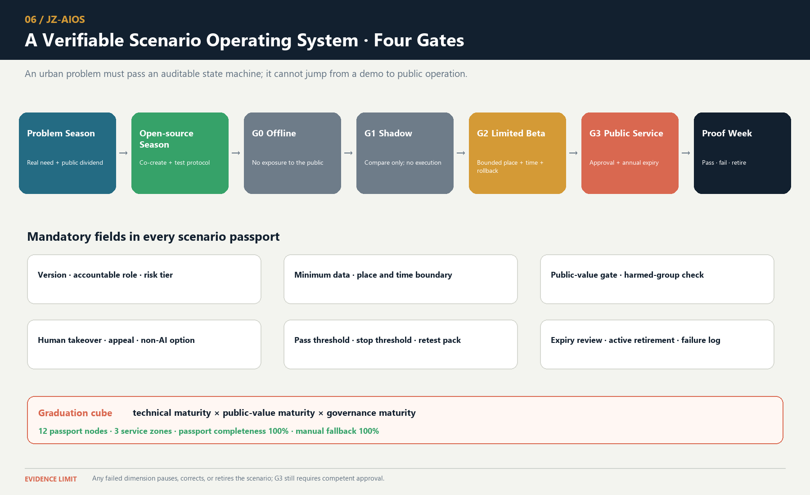
Land Use, Building Scale, and Retain-Renovate-Demolish Strategy
Land-use classification uses the project-permitted codes 0701, 0702, 0802, 0803, 0804, 05, 1401, 1403, and 16. Thirty-six units fully cover the provisional overall extent; a color-coded diagram is not presented as statutory land use. Code 1403 represents a functional envelope suitable for public activity. PUBLIC_SPACE records only the nine public nodes receiving direct design intervention, so the two areas are not expected to match. They will be reconciled after formal parcel and public-space data become available Standard [assumption:A-PUBLIC-SPACE-SCOPE-003].
The building layer consists of conceptual massing prototypes. Their count, footprint area, and overall representation ratio can be recalculated Metric Metric Metric. The prototype count and footprint coverage within the key areas indicate whether the drawings genuinely refine the three state stations; they do not represent existing or statutory building density Metric Metric. Prototypes have three classes: retain_for_assessment enters investigation of historical, structural, and use value; adaptive_reuse_candidate gives priority to comparing adaptive-reuse options; and new_build_candidate may be refined only after regulatory planning, ownership, fire safety, daylight, transport, and municipal conditions are all confirmed. There is currently no “demolish” class because the evidence is insufficient to support such a judgment Spatial data Depth.
Building-form principles serve the public frontage rather than pursue a technological aesthetic. Along the railway, reduce ground-level enclosure and increase visual permeability. Organize research clusters around shared courtyards. Prioritize small scale, mixed use, and everyday services in Origin Community. At Dazhongsi, separate staffed service, logistics, and public frontages. Avoid abrupt massing at heritage and residential edges. Building height, floor area ratio, total floor area, number of stories, and construction scale all remain unknown. The A3/A0 masses explain spatial relationships only and cannot support investment estimates or approval.
Transport, Rail, Municipal Infrastructure, and Public Services
Transport evidence has two layers. Existing roads, railways, and waterways come from OpenStreetMap, are used only for directional identification, and retain ODbL attribution; they cannot establish road red lines, railway protection zones, or waterway blue lines Source [assumption:A-OSM-001]. Design centerlines are conceptual proposals for slow mobility, lateral stitching, connections, and service wings; route count and length can be recalculated Metric Metric. The route layer and professional depth provide separate machine and human review entry points Spatial data Depth.
The six spatial interfaces follow one protocol: first document existing breaks and detours; then propose a minimum continuous walking and accessible line; then add cycling and transit connections; and only then discuss works crossing roads, rivers, or railways. Every interface must provide an everyday non-AI route, a clearly identified human contact, and quiet and no-testing periods. Robots and test vehicles must not occupy commuter movement, nighttime quiet periods, or peak public passage. Road widths, turning movements, bridges, underground connections, and station interchanges shown in conceptual drawings do not replace surveys or specialist design.
Municipal and new infrastructure follows four principles: edge-based, minimal, replaceable, and degradable. The three service zones record functions only and make no claims about equipment capacity. In normal L0 state, approved digital services are available. In degraded L1 state, personalization and automated control are disabled. In offline L2 state, physical wayfinding, staffed service, lighting, and emergency stops remain available. A trusted data space exchanges only tasks, permissions, anonymized results, and audit evidence; sensitive raw data remains at source wherever possible. Computing, energy, network, fire-safety, flood-control, and utility capacity must all be confirmed after formal engineering information is obtained.
Public services use a nested logic of an “outer fifteen-minute planning framework + inner five-minute support cells.” The fifteen-minute layer proposes connections among talent advice, childcare, health, legal support, meetings, accessibility, and community activities. During co-creation or testing, the five-minute layer requires walkable access to staffed help, rest, toilets, basic supplies, and screen-free information. The five-minute objective comes from Haidian’s public priorities, but without real population, facility capacity, walking-network, and service-radius data, the plan does not claim that coverage already exists Source. Every intelligent service must coexist with staffed counters, telephone, print, or physical wayfinding. Non-AI access coverage is recalculated from public-space attributes Metric.
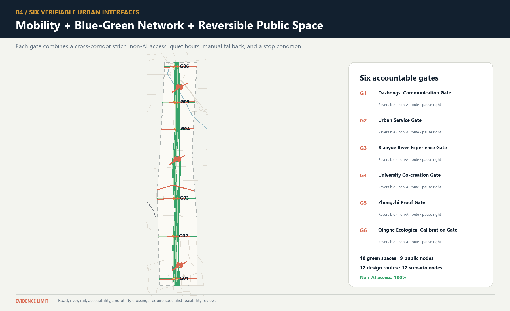
Blue-Green Network, Public Space, and Urban Character
The blue-green system no longer claims to build the main green spine from scratch. The publicly reported approximately 9 km green corridor, north–south sections, fishbone slow-mobility network, and sponge facilities become an existing baseline pending field verification. The proposal’s increment is limited to continuity audits at the six interface types, low-risk learning interfaces at the three state stations, and reversible components that do not damage everyday recreation Source Spatial data. Green-space area and count are still recalculated from submission-package design geometry Metric Metric and cannot be represented as as-built conditions. Because the ratio uses the provisional boundary as its denominator, it inherits low confidence Metric Depth.
The nine public spaces consist of three pilgrimage-landmark living rooms and six spatial interfaces, forming a line–surface–point network. Daily-life mode is the default at every space. Public learning or bounded Beta begins only when notice, authorization, time limits, and rollback conditions are all in place. Quiet mode applies from 22:00 to 07:00. Screen-free areas are the default, and bright large displays, continuous broadcasting, and dense camera arrays are not treated as technological character. Public-node count and area can be recalculated Metric Metric. The ratio remains a low-confidence conceptual value; screen-free defaults and the spatial layer retain separate review entry points Metric Metric Spatial data.
The public-space component library contains six replaceable component types: bilingual/tactile milestones; offline maps and human-call points; switchable low-level guide lighting; mobile joint-testing tables; rain gardens and shaded seating; and bounded test barriers with physical emergency stops. Every component must be usable without an account, retain basic function when power is lost, and identify who is responsible for maintenance. Bridges, tunnels, equipment foundations, and utility conditions require separate investigation.
Culture follows a “double helix of trustworthy narrative.” The physical strand explains railway engineering → urban growth → Zhongguancun innovation. The learning strand explains problem raising → model failure → human correction → public verification. Public Beijing materials show that Phase I of the Jing-Zhang Railway Heritage Park connects universities, research, and residents’ lives through railway remains, green public space, and functional stitching. Public participation and the responsible-planner mechanism in the existing project also show that cultural space requires continuous professional stewardship Source Source. V2 does not copy the existing landscape; it turns “source, correction, and failure” into new cultural content.
All AI-generated text, images, audio, video, or virtual scenes carry both public-facing explicit labels and, where applicable, file-metadata labels. Disputed content enters human curatorial review and is removed if it cannot be verified. This rule is consistent with the direction of the 2025 synthetic-content labeling regime, but formal operation still requires legal review Source. The international message is “Build in public. Test with people. Keep the evidence.” It emphasizes open development, joint testing, and retained evidence rather than claiming global leadership or completed delivery.
Renewal Projects, Implementation Policy, and Phasing
This section places phases, pilots, participating parties, and measurable indicators within one implementation framework. Each project first states prerequisites and then a proposed responsibility combination and acceptance indicators. At every phase, monitoring, resident feedback, and professional assessment must determine whether to continue, correct, or exit.
Maintenance urbanism: from everyday issue to ordinary baseline
This round adds no scene, project, or spatial object. It places the existing 12 SCENE-001—012 records and eight JZ-01—08 records into five maintenance task families: accessibility repair (accessibility_repair), climate-comfort upkeep (climate_comfort_upkeep), public-service continuity (public_service_continuity), heritage-authenticity correction (heritage_authenticity_correction), and small-business service support (small_business_service_support). These are user-goal maintenance classifications, not new scenes, project numbers, or committed services Spatial data.
| Maintenance task family | Existing scenes → existing projects | Maintenance focus |
|---|---|---|
| Accessibility repair | SCENE-009 → JZ-01/JZ-05; SCENE-010 → JZ-01/JZ-02 | Everyday issues, accessibility co-testing, break-point repair, and the non-AI route |
| Climate-comfort upkeep | SCENE-002 → JZ-02/JZ-03; SCENE-008 → JZ-01/JZ-02 | Upkeep of comfort, energy, and environmental conditions; sensors or equipment are not presented as outcomes |
| Public-service continuity | SCENE-003 → JZ-03/JZ-07; SCENE-004 → JZ-07/JZ-08; SCENE-007 → JZ-04; SCENE-012 → JZ-05 | Published failures, staffed handoff, service restoration, and independent recheck |
| Heritage-authenticity correction | SCENE-005 → JZ-04/JZ-06 | Curatorial recheck of sources, narratives, and correction records |
| Small-business service support | SCENE-001 → JZ-03; SCENE-006 → JZ-04; SCENE-011 → JZ-05 | Problem clinic, staffed service, and understandable support for small operators |
The loop starts when an issue enters, but it must not be presented as a collected real complaint: every record is only a pending issue shell, followed by a work-order shell, responsibility acceptance, planned/actual human hours, existing-facility inspection, clean/adjust, repair, repairable-component replacement, independent recheck, and a continue/correct/stop decision. Procurement may be considered only after inspection, cleaning or adjustment, repair, and component replacement prove insufficient. Lifecycle cost, repairability, component availability, retirement, and return-to-ordinary-baseline fields remain explicit, while no budget, procurement, personnel, hours, repair, or effect is invented Metric Metric.
The human journey makes maintenance workers, cleaners, staffed service workers, curators, and accessibility co-testers visible. They may receive, decline, or transfer an issue; no real work order exists before responsibility is accepted. A failed independent recheck, repeated failure, missing safe staffed route, or inability to restore daily use triggers stop, removes the temporary layer, and returns to the ordinary baseline. The quarterly maintenance map is a blank template for reviewing task family, existing scene/project, failure type, and retirement decision; it cannot display real complaints, budgets, or performance. maintenance_urbanism_contract stores these fields, the 12-scene-to-existing-project mapping, and zero/unknown reality counters in auditable form Spatial data [assumption:A-MAINTENANCE-URBANISM-012].
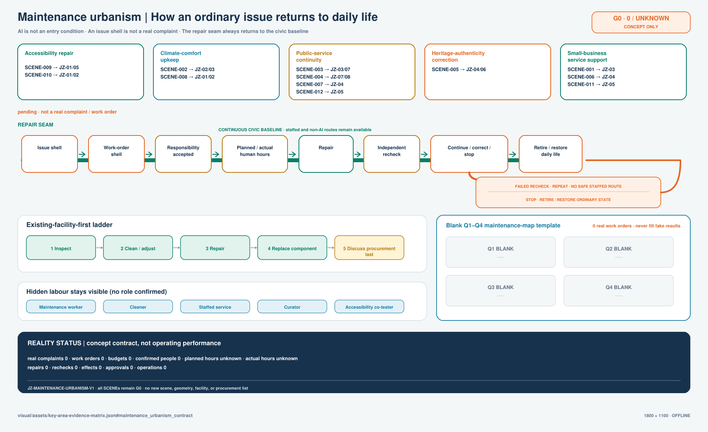
AI urban metabolism: twelve scenes, seven resources, complete exit
This round still adds no scene, project, geometry, or maturity. It creates twelve G0 resource passports for the existing SCENE-001—012. Each passport records seven resources together: compute; energy; equipment and materials; data; human review; vendor dependency; and failure/exit cost. The boundary extends beyond the server to edge and network, public or personal end devices, sensing/display/fixings, staffed and non-AI baselines, and place accessibility, quiet, and restoration. Complete fields prove design coverage only; they do not prove energy saving, carbon reduction, low cost, procurement, or operation Spatial data Metric.
| Key area | Four existing scenes | Metabolic burdens that must remain visible | First exit questions |
|---|---|---|---|
| Zhongzhiyuan | SCENE-001—004 | Mobile equipment and batteries, edge/network, incident material, human takeover, and long-lived archives | How are devices isolated, repaired, returned, or recycled; what minimum incident record remains; how is the continuous bypass restored? |
| Origin Community | SCENE-005—008 | Media/source rights, shared devices, consent and withdrawal, safeguarding/curation/co-testing labour, quiet clearance | How are records withdrawn or deleted; how does event kit leave; how do the two courts and daily street return first to resident use? |
| Dazhongsi | SCENE-009—012 | Route and authoritative-source updates, sensors/terminals, prohibited sensitive inference, staffed desk, four-way commuting | How does the automated layer go offline; how are records exported and corrected; how do same-task staffed service and four-way walking remain? |
Any intensity or “greener” comparison first requires a public-readable task denominator, ordinary non-AI comparison, included whole-system components, time window, completion/abandonment rule, and group disaggregation where rights may differ. The current count of valid project denominators is 0. Energy, compute, human minutes, and equipment life are not_measured; vendor, equipment-lifecycle, and responsibility acceptance are external_confirmation_required; data and rights remain not_fully_cleared. Industry averages, nameplates, vendor material, simulation values, and sensor counts cannot substitute for project measurement Spatial data Metric Metric [assumption:A-URBAN-METABOLISM-014].
Exit means more than “switch off.” Every component needs a destination: retain an existing facility; repair/reuse on site; redeploy elsewhere; return to supplier; compliant recycling or disposal; data export—deletion—minimum-log closure; and restoration of the ordinary place plus same-task staffed/non-AI service after cables, fixings, signs, queues, and temporary equipment leave. If denominator, source, responsibility, vendor export/repair terms, component destination, ordinary path, or independent retest is open, the decision remains NO-GO / G0. Even a future test PASS is not deployment authorization, site approval, procurement approval, rights clearance, or environmental benefit Spatial data.
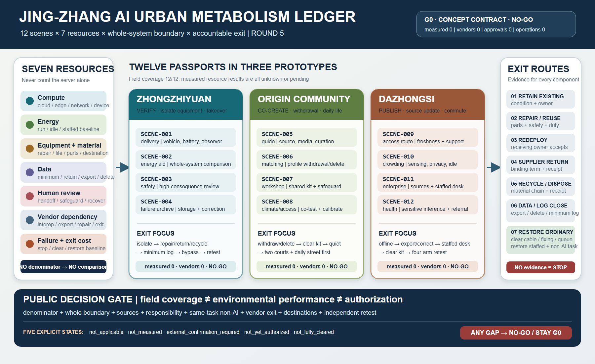
Antifragile failure governance: write back every stop; never turn recovery into authorization
The proposal already has a failure siding, ordinary–verification–fault–recovery states, a civic timetable, scene passports, and the T-02 synthetic replay. This round draws no duplicate siding and creates no new governance brand. It closes the most important gap inside existing JZ-AIOS: each pause, review, recovery, withdrawal, or retirement prepares one atomic writeback across the scene passport—civic timetable—evidence matrix. If a carrier is missing, version-inconsistent, or contradictory, the public interface shows the more conservative combination, the ordinary/non-AI path takes priority, and restart is prohibited. Runtime, maturity, authorization, and service remain separate axes. Restoring ordinary use neither advances G0 nor creates deployment authorization Spatial data Spatial data [assumption:A-ANTIFRAGILE-GOVERNANCE-015].
Six failure classes enter one grammar: safety/accessibility; rights, consent, and prohibited data; source, version, and reproducibility; service and staffed handoff; evidence and decision; and place restoration and exit. The first two trigger an immediate hard stop. Source/version failure freezes output and preserves prior evidence. If the staffed path is missing, automation stops while the same-task staffed/non-AI service remains, or a safe refusal is issued. A bad denominator, unsupported evidence, or an appeal excluded from go/no-go holds the decision. If a component, dataset, service, or place has no accountable destination, the system stays stopped or actively retires. Public records disclose only the affected task, failure class, current state, correction, evidence version, ordinary detour, and role type. They exclude complainant identity, sensitive narrative, raw personal data, and any shame ranking Metric Metric.
| Carrier | Required on pause | Required on recovery or retirement | Conservative public state when missing |
|---|---|---|---|
| Scene passport | Four axes, failure class, stop-authority role, prior version, evidence/appeal refs | New version, independent retest, expiry/withdrawal/retirement, open liabilities | failure_stop / G0 / not_authorized |
| Civic timetable | Public runtime, ordinary/non-AI path, staffed contact, start time, next update | Ordinary-use restoration, available service, source version, detour/exit | Automation unavailable; ordinary path or safe refusal first |
| Evidence matrix | Claim held or narrowed, evidence anchor, scope, and limitations | Appended correction, prior evidence retained, retest, go/no-go, and “does not authorize” | Claim remains held; an old PASS cannot restart it |
The readable journey uses the T-02 STOP-STALE-SOURCE event as a synthetic example: 1) a synthetic request hits a stale-source condition and produces no substantive answer; 2) output freezes while the paper source page and staffed path remain; 3) it hands off to the “source-pack custodian” role, which remains unconfirmed; 4) the same event prepares all three writebacks; 5) a correction version is appended without deleting the old version; 6) an independent role replays the locked condition in full, while completed real retests remain 0; and 7) open evidence means staying stopped or retiring, while closure restores ordinary use only. T-02 remains deterministic, PII-free, free of model/API/real-service calls, and fail-closed. It is not a real incident, service result, or field recovery Spatial data Metric.
The public may request stopping or appeal orally, on paper, or through a future real staffed window without an account, QR code, or AI. A decision receipt must record one effect: hold, narrow scope, correct, retest, withdraw, retire, or reasoned no change. New evidence is append-only: a new record links through supersedes / superseded_by, and the prior record remains addressable instead of being overwritten. Repeated hard failure, no accountable stop authority, inability to restore the ordinary/non-AI path, an unclosed rights event, an independent retest that cannot reproduce the claim, or an exit without a destination makes active retirement a legitimate NO-GO result. A retirement receipt closes service and authorization, component destinations, data/logs, same-task service, place restoration, unresolved liabilities, and independent acceptance Metric Metric.
Permanent authorization boundary: a file check, synthetic replay, machine PASS, independent retest, or restoration acceptance is valid only for its named object, decision-maker, evidence, scope, and limitations. None authorizes trial, procurement, construction, deployment, maturity advancement, site approval, professional approval, rights clearance, or a real-world outcome claim. Real failure events, confirmed stop authorities, public corrections, real independent retests, active retirements, and approved restarts all remain 0. Stop-to-staffed-handoff time and ordinary-use-recovery time remain unknown rather than blank or fabricated Metric Metric Metric.
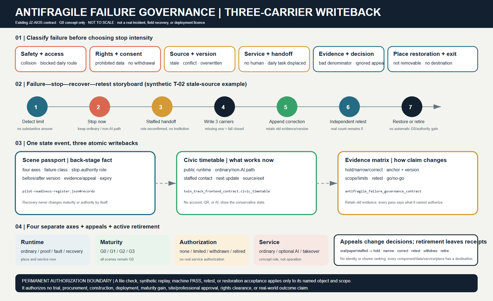
Climate-resilience proof corridor: establish the ordinary blue-green baseline before any prompting increment
This round creates no separate climate-governance brand and does not rebuild maintenance work orders, the resource ledger, the failure siding, or the rights system. It applies those existing back-stage constraints to one readable climatic relationship. A continuous ordinary blue-green route—shade and reachable-rest intent—static non-AI notice—manual-inspection handoff—stormwater/ecological-maintenance clear zone first forms a complete daily baseline. Only under future approved, bounded, accountable conditions may an AI-assisted prompt and a conceptual Xiaoyue River climate-observation edge appear as intermittent, refusible, stoppable, removable overlays. The observation wing is a relational prototype—not an exact riverbank location, existing building, setback, built facility, or engineering conclusion Spatial data Spatial data [assumption:A-CLIMATE-RESILIENCE-016].
The typical section places three non-competing bands together. The ordinary path and shade/rest intent remain continuous. Stormwater infiltration and overflow, landscape/water inspection, and ecological processes form a clear zone that equipment cannot enter. Removable mounts, power, network, data, signage, and queues may occupy only the service edge. Any overlay that narrows ordinary movement, blocks rest, obscures readable cues, obstructs stormwater or ecological maintenance, lacks human confirmation, or continues activity in extreme weather fails closed: stop the optional layer; remove components and fixings; isolate power/network; close data and service under future approved rules; clear signs and queues; repair surfaces; and obtain independent acceptance of ordinary-place recovery. Sensors cannot replace landscape, water, site, emergency, accessibility, or community judgment. The place and same-task service must remain complete after equipment exits Metric Metric.
| Same task | Primary static non-AI path | Optional AI-assisted branch | Shared stop conditions |
|---|---|---|---|
| Receive an understandable, human-confirmed climate-safety action and choose ordinary movement, rest, staffed help, or exit | A high-contrast physical notice uses an approved public source and manual observation, states source/date, action, staffed or paper contact, and exit; no account, QR, screen, sensor, model, or network | Separately disclosed and voluntarily chosen; uses only future approved minimum data; the same human owner confirms the same action vocabulary, ordinary route, staffed handoff, appeal, and exit | stale source, branch disagreement, no human confirmation, inaccessible output, power/network loss, rights event, damage to the ordinary route or maintenance clear zone |
The branches compare the same task and group-specific outcome; a faster digital prompt cannot be purchased by weakening static service. A future comparison must separately record completion, abandonment, breaks, waiting, staffed handoff, and rights outcomes for older people, disabled/reduced-mobility users, low-digital-literacy users, and people without a device or account. Real prompt events, false-positive/false-negative results, response times, group outcomes, and confirmed operators currently remain 0 or unknown. Diagram or template completeness and a synthetic PASS cannot prove warning accuracy Metric Metric.
The vulnerable-group journey retains one task across four states: 1) in ordinary state, physical wayfinding reaches shade/rest intent, spoken or paper help, and direct exit; 2) in optional-assistance state, the person reads the static notice first and may choose or refuse the branch while retaining the same human, appeal, and exit; 3) in extreme-weather stop, every activity and optional device stops, with a physical safe refusal directing the ordinary exit or staffed handoff; and 4) in recovery, hazards, stormwater/maintenance clear zones, ordinary route, rest intent, physical notice, surfaces, and manual inspection are accepted first while the optional layer remains off. Restoring ordinary use does not advance G0 or create restart authorization Spatial data.
Future measurement uses a typed anchor, denominator, and proof limit instead of render precision. Continuous shade length needs a surveyed path segment plus dated solar or observation record. Reachable rest needs a surveyed node plus accessibility co-test. Manual-inspection coverage needs a versioned route log and accountable signature. Warning error needs preregistered same-task events, reference source, and independent retest. Stormwater maintenance needs an official facility inventory, maintenance record, and acceptance. Stop time needs an approved event log and verified timestamp. Equipment exit needs a complete component register and place-restoration receipt. All seven are currently unknown, with 0 real field measurements; green ratio states a conceptual geometry ratio only, while the real-measurement count states evidence status only Metric Metric. Continuous-shade and reachable-rest values still require formal survey and co-test. Provisional geometry, conceptual nodes, and sensor counts cannot substitute for microclimate, thermal comfort, hydraulic capacity, sponge performance, or accessibility results Metric Metric.
Seasonal operation states triggers rather than inventing an annual roster. Heat or solar attention begins with inspection of ordinary shade/rest intent and a human-confirmed static notice. Rain or stormwater attention begins by protecting flow, overflow, inspection, and maintenance access. Ecological-maintenance windows take priority, moving equipment and public activity outside the work zone. Extreme weather, unknown hydraulic consequence, maintenance conflict, unavailable accountable staff, or inability to restore the ordinary place requires stopping. Official boundaries, survey, microclimate, stormwater/municipal/ecological conditions, ownership, opening windows, duties and stop authority, professional conclusions, thresholds, equipment, and rights all remain external unknowns rather than climate-performance claims.
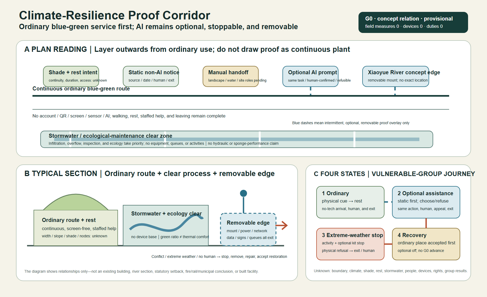
Eight projects form a renewal package that maps space, protocols, and operations one to one Depth:
| Project | Main content and Feature | Prerequisites | Proposed responsibility combination | Conceptual acceptance |
|---|---|---|---|---|
| JZ-01 Accessible Stitching at Six Interfaces | PUBLIC-004—009 and the lateral interface lines | Existing-condition survey and transport/accessibility review | Public bodies + transport/landscape professionals + community | I01—I06 each have a continuous non-AI line, break-point register, and rollback plan |
| JZ-02 Reversible Time-Space Park | Nine public spaces, the main green spine, and sponge stitches | Green-space, water, railway, and operations conditions | Landscape/ecology professionals + community operator | Daily, learning, Beta, quiet, and offline modes can switch |
| JZ-03 Zhongzhi Verification Commons | AI-ZONE-001 and four nodes | Safety, network, fire safety, and responsible entity | Technical testing + safety/ethics + on-site operations | Retestable, emergency-stoppable, and able to publish failures |
| JZ-04 Origin Open-source Co-creation Street | AI-ZONE-002 and four nodes | Community co-creation, education, and copyright rules | Universities/developers + community + curation | Withdrawal, licensing, non-technical participation, and joint testing are verifiable |
| JZ-05 Dazhongsi Urban Services Portal | AI-ZONE-003 and the staffed service desk | Station-city, transport, commercial, and public-service conditions | Enterprise service + staffed counter + operations | Sources, expiry warnings, human handoff, quiet operation, and screen-free space all coexist |
| JZ-06 Trustworthy Narrative Double Helix | Three landmarks, milestones, and failure archive | Historical-source, copyright, trademark, and accessibility review | Curation + heritage/history professionals + public | Full coverage of sources, AI labels, correction, and alternative media |
| JZ-07 Scenario Passports and Open Benchmarks | JZ-AIOS, retest packages, and annual expiry | Legal, safety, data, and professional review | Independent evaluation + responsible operations + community seats | Passport fields, manual fallbacks, and stop thresholds are complete |
| JZ-08 Four-Season Operations and Proof Week | Annual problems, open source, Beta, and evidence release | Budget, venue, responsible party, and event approval | Proposed Jing-Zhang Open Collaboration Desk | Publish passes, failures, corrections, and voluntary retirements together |
visual/assets/pilot-readiness-register.json adds conceptual RACI, approval triggers, prohibited data, incident and shutdown responsibility, community co-testing, exit and recovery, independent retesting, and go/no-go evidence for JZ-01—JZ-08 and T-01—T-03. “Coverage” means only that all eight projects and three pilots have these fields; it does not mean that responsible parties have accepted roles, approvals have been obtained, or pilots have operated. Current status remains uniformly G0/concept_only, while field outcomes and recovery time remain unknown Spatial data Metric.
To make those existing requirements handoff-ready, readiness-closure-contract.json reduces each item to nine mandatory evidence closures: role acceptance; approval scope; site, window, and daily baseline; prohibited-data control; stop authority; recovery rehearsal; community co-test; independent retest; and the final go/no-go minute. Every category must close before G1 can be considered, any missing category means NO-GO, and an active stop condition overrides prior authorization. All 99 slots across the 11 items are currently open, 0 are closed, and all 11 decisions remain NO-GO. These counts disclose missing real-world evidence rather than treating template completeness as feasibility performance Spatial data.
implementation-handoff-matrix.json then crosswalks those 11 items to all 12 existing preregistration scenes. Each item resolves to the current PHASE-1, spatial objects, a closure record, and seven handoff packs that collectively cover all nine closure categories; every scene resolves to at least one existing project or protocol. Documentation destinations are now mapped for 12/12 scenes, but all 99 stable real-world evidence IDs still have no submitted artifacts, while approved items, operating items, field tests, known real-world results, and GO decisions remain at 0. This strengthens professional transfer without upgrading implementation maturity Spatial data.
A professional team therefore does not need to reinterpret all 99 slots. It submits real-world evidence through seven existing handoff packs. One artifact may enter more than one review packet, but the NO-GO decision changes only when the corresponding nine closure records are completed one by one:
| Handoff pack | Required real-world material | Closure object | Current state |
|---|---|---|---|
| H01 Authority and stop chain | Real accountable-party acceptance, operating-party acceptance, and a reachable stop chain with shift coverage | Role acceptance | Not submitted / NO-GO |
| H02 Approval and scope | Approval register, approved site and time window, conditions, and expiry | Approval scope | Not submitted / NO-GO |
| H03 Site and ordinary-use baseline | Dated site survey, ordinary-use baseline, and same-task non-AI comparator | Site/window baseline | Not submitted / NO-GO |
| H04 Data and safety | Prohibited-data control, minimum-data inventory, and incident/retention procedure | Prohibited-data control | Not submitted / NO-GO |
| H05 Stop and recovery | Physical or procedural stop test, named restart authority, and rehearsed restoration/acceptance record | Stop authority + recovery rehearsal | Not submitted / NO-GO |
| H06 Public parity | Community co-test, same-task non-AI parity comparison, and appeal/withdrawal record | Community co-test | Not submitted / NO-GO |
| H07 Retest and decision | Independent retest package, versioned finding register, and signed go/no-go minute | Independent retest + final decision | Not submitted / NO-GO |
Phasing uses “year window + evidence gate”; a date never automatically grants eligibility to enter the next phase Spatial data Metric Depth:
| Window | Status | Admission gate | Graduation gate | Rollback |
|---|---|---|---|---|
| Years 0—2 | G0 concept/offline and G1 shadow | Complete sources, responsibility, risk, baseline, and manual fallback | Safe rollback, public-value gate passed, and complete retest package | Any major safety, privacy, accessibility, or public-value failure |
| Years 3—5 | Approved G2 bounded Beta | Independent retest, community deliberation, professional review, and site permission | Pass the three-dimensional graduation cube and publish evidence | Repeated failure, unanswered grievances, or undelivered public benefit |
| After Year 5 | Apply for G3, expand, correct, or retire | Formal approval and operating resources defined | Annual report confirms continuation, correction, or voluntary retirement | Major change in boundaries, controls, technology, or social impact |
Annual operations follow a four-season protocol. In the first quarter, “Problem Season,” communities, universities, and urban service providers publish problems suitable for public release. In the second quarter, “Open-source Season,” teams, protocols, and offline baselines are formed. In the third quarter, “Urban Beta Season,” only approved bounded tests operate. In the fourth quarter, “Proof Week,” passes, failures, complaints, corrections, and voluntary retirements are published, generating the following year’s problems. The developer-transformation funnel is “public problem → co-creation team → offline baseline → bounded application → public evidence → staffed service / enterprise transformation / external retest.” Participation must never be presented as a commitment to investment promotion, funding, or policy. Event branding uses seasonal colors from the same logo and does not create a separate IP that conflicts with the belt’s primary brand.
Operations propose a “Jing-Zhang Open Collaboration Desk.” Public bodies define rules only within their statutory duties. Professional organizations review space, data, safety, and accessibility. Universities and firms supply withdrawable projects. Community representatives hold agenda seats and rights to grievance and proposed suspension. The annual report must disclose services, public benefits, complaints, data incidents, human takeovers, energy use, failures, and improvements together. Target values must not be presented as achievements when measured data do not exist.
Metrics, Area Recalculation, and Compliance Matrix
The seven indicator categories are presented as readable review questions:
- Site and key-area scale: provisional site area, key-area count, and total key-area area Metric Metric Metric.
- Land-use structure: land-use unit and category counts Metric Metric.
- Building representation: massing-prototype count, footprint, and overall representation ratio Metric Metric Metric.
- Key-area massing: key-area prototype count and footprint coverage Metric Metric.
- Blue-green system: green-space area, count, and ratio Metric Metric Metric.
- Public space: public-space area, node count, and ratio Metric Metric Metric.
- Transport: design-route count and length Metric Metric.
The required area families now go beyond unit counts and are complete by recomputable object while retaining the conceptual-design boundary:
- The commercial-service, residential, and community-service envelopes are recalculated from the land-use layer; they are not statutory parcels or land-supply quantities Metric Metric Metric.
- Research and development, culture, and education/research envelopes likewise describe only the current design geometry; they create no floor-area ratio or construction quantum Metric Metric Metric.
- Green-space, plaza/public-interface, and flexible-reserve envelope areas are recalculated separately; the 1403 functional envelope is not the same as the nine direct
PUBLIC_SPACEintervention footprints Metric Metric Metric.
- Areas for the three year windows come from
geometry/phasing.geojson. They show evidence-gate coverage only, not approved construction boundaries or an automatic delivery sequence Metric Metric Metric.
- Each key area retains a low-confidence area recalculated from its provisional polygon. Published approximate areas and provisional-geometry areas remain separate fields, while official polygon areas remain unavailable Metric Metric Metric.
AI and public-value indicators are separated in the same way:
- Scenario scale: service-scenario, mapped-node, and service-zone counts Metric Metric Metric.
- Operating interfaces: spatial interfaces I01—I06, passport-field coverage, and manual-fallback-field coverage Metric Metric Metric.
- Public access: non-AI access and screen-free-default coverage Metric Metric.
- Implementation: three phase gates Metric.
- Field grounding and handoff readiness: site-grounding observations, responsibility-field coverage for eight projects and three pilots, and the post-opening field-audit count that remains 0 Metric Metric Metric.
- First-test documentation: all 12 scenes have preregistration records with 100% required-field coverage Metric Metric.
- First-test real-world evidence: completed preregistrations and approved windows both remain 0 Metric Metric; field executions and known independently retested results also remain 0 Metric Metric.
These indicators prove only “what has been designed” in the submission package; they do not prove real-world operating performance.
All area ratios using the provisional boundary as their denominator have low confidence. Counts of design objects and attribute-completeness rates may have high confidence. Route lengths and massing areas have medium conceptual-design confidence or low confidence where affected by the boundary. Floor area ratio, total floor area, building density, average height, road area and road ratio, parking supply, measured recovery time, and energy per effective service remain pending until statutory material or controlled-test evidence is available; massing-prototype coverage and road centerlines are not substitutes Metric Metric. The fixed evidence chain is “public source / explicit assumption → GeoJSON → EPSG:4548 recalculation or attribute count → metrics.json → text / drawings / HTML → machine self-check → human professional judgment” Depth.
compliance_matrix.json maps all 23 tasks to task-specific prose, Features, metrics, sources, assumptions, and checks. standard_matrix.json and design_depth_matrix.json apply the same item-level evidence allocation to professional requirements; none uses a duplicated generic evidence bundle.
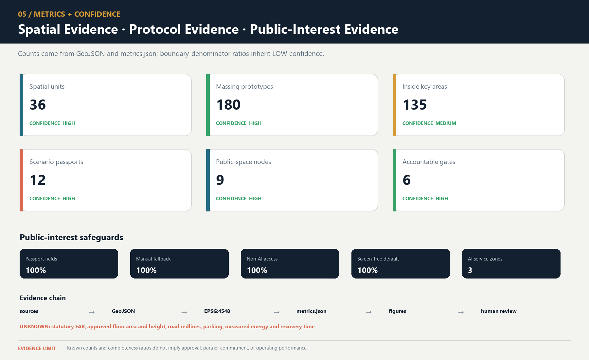
Risk, Copyright, and Compliance
- Boundary and planning risk: Official GIS/CAD, ownership, regulatory planning, road red lines, and engineering conditions are absent. Every spatial conclusion is only a conceptual recommendation. When formal information becomes available, it must replace the provisional data, be compared for differences, and trigger full recalculation.
- Spatial-representation risk: The 36 units and massing prototypes are design representations, not an existing-condition survey. The representation ratio must not be interpreted as building density or construction scale [assumption:A-SPATIAL-REPRESENTATION-002].
- Public-interest risk: Testing may create noise, congestion, digital exclusion, or privatization of public space. Everyday life, non-AI access, quiet and screen-free operation, joint testing, grievance, and suspension are hard gates.
- AI and data risk: Bias, hallucination, privacy leakage, unauthorized automation, and vendor lock-in are controlled through data minimization, retention at source, logging, human responsibility, retesting, expiry, and retirement. Automated enforcement, diagnosis, and substitution for formal approval are prohibited.
- Safety and resilience risk: Robot, vehicle, and equipment testing occurs only within authorized areas. Physical emergency stops, on-site safety officers, offline human operation, and L0/L1/L2 degradation must remain available. Energy and recovery indicators remain unknown until measured.
- Cultural and historical risk: Historical facts, people, artifacts, and engineering materials require verification through official, archival, or rights-cleared sources. AI-generated content receives explicit and metadata labels; disputed content can be corrected, removed, and traced [assumption:A-CULTURE-CONTENT-006].
- Copyright and branding risk: The final file set contains 89 manifest paths, including 88 non-manifest content files; its 89 file-level asset records and 29 source-evidence records prove disclosure and link closure only. Coverage completeness becomes valid only after the manifest and rights ledger are refreshed from the final Git blobs and pass validation. Completed independent file-level clearance audits remain at 0 and the overall status is
not_fully_cleared.submission-use-rights-matrix.jsonnow records the current decision for announcement clause 8.1, repository review, organizer project use, entrant external display, cross-project reuse, and third-party components, but the package does not prove that the formal announcement terms apply identically to this GitHub open Agent call. The completeCOMMUNITY-DISPLAY-ONLYterms, written consent, OSM ODbL obligations, PDF fonts, Node.js runtime and generation-tool terms, and logo/landmark trademark status still require review; the package must not claim full clearance Spatial data Spatial data. - External-coordination risk: Future Science City, Huairou Science City, the Beijing Economic-Technological Development Area, other innovation districts, and Beijing–Tianjin–Hebei are only optional retest roles. Without written confirmation, none may be described as a partner, investor, or committed implementation party [assumption:A-EXTERNAL-COLLAB-005].
- Operations and equity risk: Event popularity cannot replace resident satisfaction, accessibility, fairness, or complaint closure. Recognition for contributions must not be used for traffic rankings, employment screening, or administrative evaluation.
- Tool and evidence risk: Machine checks verify only structure, topology, references, and consistency. They do not replace professional judgment in planning, architecture, transport, municipal engineering, landscape, ecology, fire safety, railway safety, data security, accessibility, community engagement, or law Depth.
- Public-reporting versus field-condition risk: This Firecrawl desk-research pass preserves public-page sources, dates, summaries, and content digests for citation and design judgment only. It did not conduct a site visit, review as-built drawings, or audit facility operations. Every claim involving exact location, built condition, intensity of use, or accessibility performance requires field verification before G1 Spatial data.
The rights matrix strictly separates “reviewable inside the repository” from “cleared for public or professional reuse.” Only disclosed repository review is currently allowed; a PR, machine PASS, or publicly visible file never releases any other use automatically:
| Use context | Current decision | Missing evidence |
|---|---|---|
| Repository validation, Issues, and PR review | Disclosed review only | No additional licence; author, tool, source, and provisional-boundary disclosures must remain |
| Organizer use or modification within this Jing-Zhang project | Needs confirmation | Clause applicability and third-party authorization audit |
| Organizer printing, publication, exhibition, or promotion | Needs confirmation | Clause applicability, attribution form, and release audit |
| Entrant external media, publication, or exhibition | Blocked | Written consent, complete licence terms, and independent file-level audit |
| Reuse in another design project | Blocked | Authoritative rights decision or new project-specific authorization |
| Translation, derivative editing, or professional deepening | Blocked pending scope confirmation | Derivative/professional-use authorization and complete editable-source inventory |
| Release of OSM, fonts, logo, software, or generated assets | Blocked pending component audit | ODbL, font-embedding, trademark, and tool-output terms audit |
All current AI scenarios are in G0 conceptual status. The eight projects and four-season events are proposals: they are not approved, built, or operating, and no organization has committed to them. Entry to a higher operating gate may be discussed only after statutory approval, responsible entities, professional review, public participation, funding and operations, and incident response are all defined.
The Century-Time Museum: A Verifiable, Correctable, Screen-free Time Education Line
This section is the Round 8 (JZ-FUTURE-07) cultural-narrative increment, inheriting prior public-rights, evidence-type, and failure-writeback contracts; no new governance brand or duplicate failure siding.
Strategic Proposition
Juxtapose the Jing-Zhang railway's survey, standards, signals, maintenance, and public memory with AI's training, validation, failure, correction, and retirement as a city time-education line that does not worship technology.
The core of this proposition is not an exhibition but a correctable time-education line—every historical fact, every archive, every generated content carries a source grade and allowable use; any disputed content has a clear flow of stop, takedown, correct, retain version, recover; all nodes require no account, QR code, screen, or AI.
Cultural Content Source and Rights Boundary
This round adds century-time-museum-contract.json (JZ-TIME-MUSEUM-G0-V1), organizing:
- Century timeline: five historical objects (1905–1909 survey & construction, 1909 full-line opening, 2019 Beijing–Zhangjiakou HSR, 2023+ heritage park phased opening, annual evidence update mechanism), each annotated with source grade, allowable use, and unknowns
- Source-grade table: seven typed evidence anchors — official_archive / in_package_source / public_reporting / public_reporting_pending_archive / osm_background / generated_content / oral_history_pending
- Oral-history consent template: pre-collection contract state; consent can be withdrawn at any time, content removed from public side after withdrawal, version retained for internal minimum audit only
- Five-step dispute-correction flow: stop → takedown → correct → retain version → recover; independent review + public notice required before recovery, otherwise stay down or retire actively
- Screen-free node chain: origin sign → atlas sign → evidence wall; no account, QR code, screen, or AI required
Metrics and Acceptance
Ten cultural metrics remain unknown or 0; field coverage must not be passed off as real-world achievement:
| Metric | Design Status | Denominator | Proof Limit |
|---|---|---|---|
| Source verifiability rate | unknown | Same-task, same-group, same-period | Field observation + independent retest |
| Uncleared content count | unknown | Same-task, same-group, same-period | Independent file-level audit |
| Generated-content label coverage | unknown | Total generated-content items | Manual check + sampling audit |
| Dispute-handling time | unknown | No real dispute events | Process log + timestamp |
| Oral-history consent rate | 0 (template only) | Total oral-history items collected | Consent record + withdrawal record |
| Multilingual concept consistency | unknown | Total concept pairs | Bilingual comparison + professional review |
| Screenless tour completion rate | unknown | Screenless-path users | Field or controlled test |
| Child comprehension (pending) | unknown | School-age user sample | Educator assessment |
| Annual retired-content count | 0 | Annual review cycle | Retirement list + receipt |
| Independent historical review status | unknown | Required reviewers | Independent reviewer signature |
Differentiated Expression Across Three Key Areas
| Key Area | Prototype Role | Time-Museum Expression |
|---|---|---|
| Zhongzhiyuan VERIFY | Parallel verification court | Equipment isolation belt + visible manual handoff window in source-grade display |
| Origin Community CO-CREATE | One street, two courtyards, four nodes | Screen-free co-learning node carrying multilingual station sign and oral-history consent display |
| Dazhongsi PUBLISH | Four-quadrant walking + one hall, one platform | One hall as staffed service and information-correction node, not an AI-mandatory entry |
Risk Preview and Stop/Recover
- R01 History metaphor passed as fact: Immediate fail-closed upon discovery; switch to staffed or ordinary use; stop-to-recover requires independent review
- R02 Using uncleared images/text: Remove temporary equipment, restore ordinary paths, notify affected persons, minimize event-evidence retention
- R03 Generated content disguised as archival material: Generated content must carry visible label; removable anytime; after takedown, version retained, not auto-deleted
Figure Delivery
century-timeline.{svg,png} bilingual time figure passed figure QA: A twin-track atlas / B source-grade table / C dispute-correction flow, all annotated G0 conceptual status and provisional geometry boundary.
Inheritance and Freeze
Geometry, existing SCENE/JZ/T IDs, eight projects, all G0 status, provisional boundaries, and not_fully_cleared remain unchanged. Official archives, confirmed accountable operators, independent retests, approval, or operating results remain 0.
[back to top](#ai-pilgrimage-belt)
References
The primary project basis comprises Source, the Beijing Municipal Commission of Planning and Natural Resources open-call announcement; Source, the repository agent taskbook; Source, the site package; Source, the source registry; and Source, the processing guide. The provisional spatial basis is Source, used only for generation, presentation, and informal review.
The direct entry to the repository’s public-information index is brief/public-brief.md; public boundary and use limitations are described in brief/README.md. Both provide only public task context and data boundaries and cannot generate statutory control values.
Local professional materials include brief/site-package/standards/standards.json and its references: Source for urban-design administration, Source for the preparation and approval of detailed regulatory plans, Source for territorial spatial land-and-sea-use classification, and Source as a data-gap record for the required depth of architectural design documents. These materials are cited to constrain the depth of representation and define risk boundaries. They do not make this proposal a statutory plan, and a gap record cannot be treated as a verified provision.
Recent policy and site context comprises Source, 2026 public information from the Beijing Municipal Commission of Development and Reform on Origin Community and the century-old Jing-Zhang corridor; Source, the “one core, multiple points” context for Beijing’s first AI innovation districts; Source, August 2026 reporting on the opening of Phase II; Source, context on Haidian’s AI test field and Origin Community; Source, midterm outcomes and objectives for three priority groups and five-minute life support; and Source, district-level directions for AI, urban renewal, and public services in Haidian’s Fifteenth Five-Year Plan. The latter four come from this round of public-web desk research and support only a real-world baseline, policy intent, and questions for verification—not a site survey, as-built proof, parcel approval, or institutional commitment.
Governance and method context also includes Source, the National Data Infrastructure Construction Guidelines; Source, the Measures for Labeling AI-Generated and Synthetic Content; Source, the State Council’s “AI+” opinion; Source, public information on Phase I of the Jing-Zhang Railway Heritage Park; and Source, material on public co-creation and professional continuity for the Jing-Zhang Railway Heritage Park. They support only direction, method, and governance boundaries; they create no project approval, funding, partnership, or control value.
The global comparison set includes Source, Source, and Source. The same set also includes Source, Source, and Source. Existing directional context is Source. Its ODbL data is used only to identify roads, railways, and waterways and cannot serve as an official boundary or engineering basis.
Generation method: the spatial design is derived from the public provisional boundary, project enumerations, OSM context, and deterministic scripts. Areas and lengths are recalculated in EPSG:4548. Scenario passports, service zones, public-space modes, and phase gates are recorded as GeoJSON attributes. PNG, A3/A0, and offline HTML are explanatory layers, while geometry/*.geojson, metrics.json, the three matrices, and self_check.json are the evidence layer. COMMUNITY-DISPLAY-ONLY is recorded only as the current license label because its complete terms are not included. File-level status, unresolved items, and use limitations are stated in visual/assets/rights-clearance-ledger.json and report/copyright_statement.md.